<!doctype html>
<html lang="en">
<head>
  <meta charset="utf-8">
  <meta name="viewport" content="width=device-width, initial-scale=1">
  <title>arxiv digest — 2026-10-21</title>
  <style>
:root {
  --bg: #ffffff;
  --fg: #1f2328;
  --muted: #59636e;
  --border: #d0d7de;
  --card: #f6f8fa;
  --link: #0969da;
}
body {
  max-width: 980px;
  margin: 0 auto;
  padding: 2rem 1rem 5rem;
  font-family: -apple-system, BlinkMacSystemFont, "Segoe UI", Helvetica, Arial, sans-serif;
  line-height: 1.55;
  color: var(--fg);
  background: var(--bg);
}
a { color: var(--link); }
img { max-width: 100%; height: auto; }
pre, code { background: var(--card); border-radius: 6px; }
pre { padding: 1rem; overflow-x: auto; }
blockquote { border-left: 4px solid var(--border); padding-left: 1rem; color: var(--muted); }
details { margin: 0.6rem 0; }
summary { cursor: pointer; font-weight: 600; }
.paper-figures-scroll {
  display: flex;
  gap: 1rem;
  overflow-x: auto;
  overscroll-behavior-x: contain;
  padding: 0.75rem 0.25rem 1rem;
  margin: 1rem 0 1.25rem;
  border-top: 1px solid var(--border);
  border-bottom: 1px solid var(--border);
  scroll-snap-type: x proximity;
}
.paper-figure-card {
  flex: 0 0 min(260px, 72vw);
  scroll-snap-align: start;
  background: var(--card);
  border: 1px solid var(--border);
  border-radius: 12px;
  padding: 0.55rem;
}
.paper-figure-card img {
  display: block;
  width: 100%;
  max-height: 240px;
  object-fit: contain;
  background: white;
  border-radius: 8px;
}
.paper-figure-caption {
  display: block;
  margin-top: 0.5rem;
  color: var(--muted);
  font-size: 0.85rem;
}
.figure-strip-hint {
  color: var(--muted);
  font-size: 0.9rem;
  margin-bottom: -0.3rem;
}
</style>
  <script>
    window.MathJax = {
      tex: {
        inlineMath: [['$', '$'], ['\\(', '\\)']],
        displayMath: [['$$', '$$'], ['\\[', '\\]']],
        processEscapes: true,
        processEnvironments: true
      },
      options: {
        skipHtmlTags: ['script', 'noscript', 'style', 'textarea', 'pre', 'code'],
        ignoreHtmlClass: 'tex2jax_ignore',
        processHtmlClass: 'tex2jax_process'
      }
    };
  </script>
  <script id="MathJax-script" async
    src="https://cdn.jsdelivr.net/npm/mathjax@3/es5/tex-chtml.js"></script>
</head>
<body>
<header style="background-color: #333; color: white; padding: 15px; margin-bottom: 20px;">
  <h1 style="margin: 0; font-size: 24px;">
    <a href="https://ochelpan.github.io/arXiv_clean/" style="color: white; text-decoration: none;">Main</a>
  </h1>
</header>

<h1>Daily arXiv Report</h1>

<hr>
<p>
<a href="index.html">← Index</a>
 · <a href="papers_01.html">← Previous</a> · <a href="papers_03.html">Next →</a>
</p>
<hr>

<h2>Papers 21–40</h2>
<p><a id="paper-2610.24077"></a></p>
<h3 id="quantum-error-correction-well-below-the-color-code-threshold"><a href="http://arxiv.org/abs/2610.24077v1">Quantum error correction well below the color code threshold</a></h3>
<p><strong>Authors:</strong> Ali Lavasani, Adam P. Reed, Joan M. Dreiling, Annie J. Park, Michael Mills, Matteo Puviani, Gabriel Matos, M. S. Allman, Noah Berthusen, Natalie C. Brown, Victor E. Colussi, Brian Estey, Cameron Foltz, Daniel Gresh, Reza Haghshenas, Akhil Isanaka, Nikhil Kotibhaskar, Anthony Ransford, Ciarán Ryan-Anderson, Brian Neyenhuis, David Hayes, Tzvetan S. Metodi, Andrew C. Potter<br>
<strong>Type:</strong> both · <strong>Category:</strong> quantum information and computing · <strong>PDF:</strong> <a href="https://arxiv.org/pdf/2610.24077v1">https://arxiv.org/pdf/2610.24077v1</a><br>
<strong>Analysis basis:</strong> full PDF text, analyzed in chunks
<strong>Topic relevance:</strong> 🔥 <code>QC/QI experiment</code> <strong>4/5</strong> · <code>quantum measurements</code> <strong>1/5</strong></p>
<div class="figure-strip-hint">↔ Scroll figures horizontally</div>
<div class="paper-figures-scroll">
<figure class="paper-figure-card">
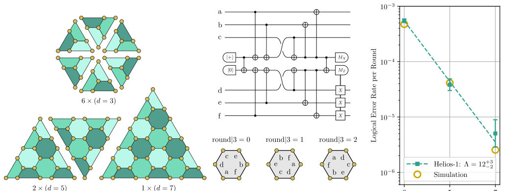
<figcaption class="paper-figure-caption"><b>Fig 1.</b> FIG. 1. Triangular color code distance scaling a) Triangular color codes at distances 3,5 and 7. The gold dots represent physical qubits, and faces correspond to the code stabilizers. For distances d = 3, 5 we run 6 and 2 parallel memory experiments per shot. b) The SWAP-superdense syndrome extraction circuit. The bottom figure shows the mapping between the wires in the circuit and the qubits in each face. For four-qubit faces, the missing wires should simply be dropped from the circuit. The mapping changes after each syndrome extraction round, with a period of three, to ensure each data qubits eventually gets swapped with a fresh syndrome qubit. c) The distance scaling plot; both...</figcaption>
</figure>
<figure class="paper-figure-card">
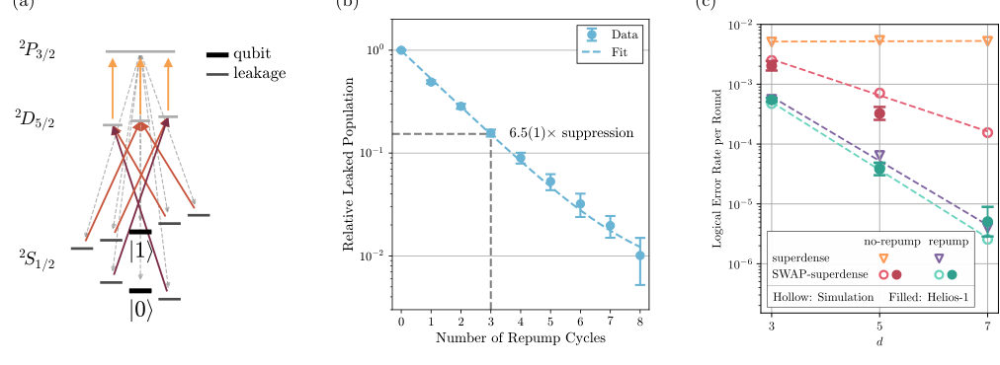
<figcaption class="paper-figure-caption"><b>Fig 2.</b> FIG. 2. Hardware-level leakage reduction a) Leakage repump scheme for 137Ba+. State-selective, narrow-linewidth transitions (red arrows) sequentially transfer leaked population to three 2D5/2 states. After each of these transitions, the transferred population is driven (orange arrows) to 2P3/2, which decays predominantly to 2S1/2 (dashed arrows). b) Leaked population versus number of repump cycles, normalized to the zero-cycle mean (see Methods). Gray dashed lines mark the three cycles used in this work and the corresponding suppression. c) Logical error rate (LER) per syndrome-extraction round, with and without circuit-level LRU and hardware-level leakage repump. Hardware-level leakage...</figcaption>
</figure>
<figure class="paper-figure-card">
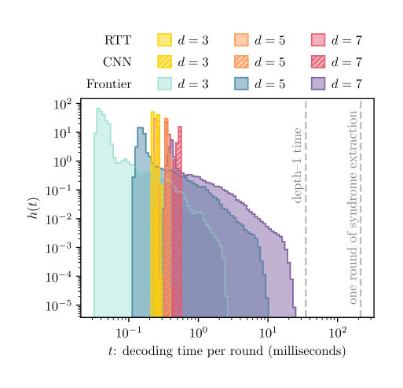
<figcaption class="paper-figure-caption"><b>Fig 3.</b> FIG. 3. Decoder statistics Decoding time distributions for streaming Frontier, CNN and RTT decoders across all three code distances; h(t) dt corresponds to the fraction of rounds, across all shots of a given distance, that took between t and t+dt milliseconds to process. The numbers for the streaming Frontier is from its WASM implementation.</figcaption>
</figure>
<figure class="paper-figure-card">
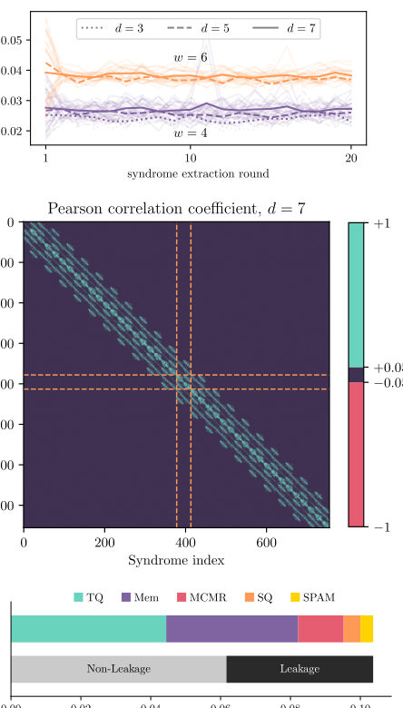
<figcaption class="paper-figure-caption"><b>Fig 4.</b> FIG. 4. Syndrome error analysis a) Average non-trivial syndrome density (ps) per round. Faded lines correspond to specific stabilizers, and bold lines indicate shot-averaged quantities for each distance. Syndromes corresponding to weight w = 4 and weight w = 6 stabilizers are averaged sep- arately. b) Correlation between detector firings. The dashed lines show the range of detectors corresponding to the 10th round of syndrome extraction, showing that correlations with the 10th round are only significant in the 9th and 11th rounds. A discrete color map is used for better contrast (see Supple- mentary Material for analogous plots with continuous color maps for all distances). c) Error budget...</figcaption>
</figure>
<figure class="paper-figure-card">
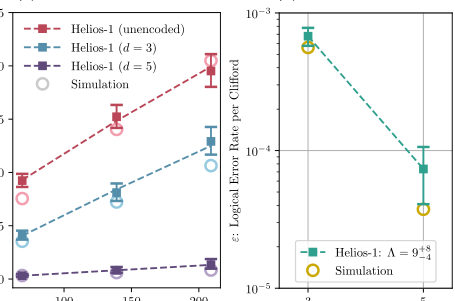
<figcaption class="paper-figure-caption"><b>Fig 5.</b> FIG. 5. Clifford 2QRB a) the Failure rate PL(m) of unen- coded and encoded Clifford 2QRB circuits for different 2QRB sequence lengths m. b) Logical error rate per Clifford gate ε for distances d = 3, 5. We extract ε assuming the decay form PL = A(1 −4</figcaption>
</figure>
</div>

<p><strong>Summary.</strong> This research demonstrates that quantum error correction using triangular color codes can operate significantly below the theoretical error threshold on a trapped-ion quantum processor. By combining hardware leakage mitigation with advanced neural network decoding, the authors achieved extremely low logical error rates. These results suggest that trapped-ion systems can reach application-relevant performance with smaller code blocks than previously thought necessary.</p>
<p><strong>Why it may be interesting.</strong> The combination of physical implementation on trapped ions with state-of-the-art ML decoding techniques pushes the boundaries of achievable error suppression, providing concrete benchmarks for fault-tolerant quantum computation.</p>
<details>
<summary>Detailed structure</summary>
<p><strong>Main problem.</strong> The paper demonstrates quantum error correction (QEC) operation well below the theoretical threshold to enable scalable, fault-tolerant quantum computation.</p>
<p><strong>Main result.</strong> They achieved logical error rates as low as $5 	imes 10^{-6}$ and demonstrated error suppression by over an order of magnitude ($\Lambda \approx 12$) when increasing the code distance.</p>
<p><strong>Method.</strong> The study combines hardware-level leakage reduction schemes with advanced machine learning decoders (CNN and Transformer) to process syndrome measurements from color codes.</p>
<p><strong>Model / system.</strong> The work uses triangular color codes on Quantinuum's Helios trapped-ion quantum processor, which utilizes $^{137}	ext{Ba}^+$ ions as qubits.</p>
<p><strong>Key observables.</strong> Logical Error Rate (LER), Suppression Factor ($\Lambda$), and performance of various decoders (Tesseract, CNN, RTT).</p>
<p><strong>Important parameters / regimes.</strong> Code distances $d=3, 5, 7$; physical error rates ($p$) relative to the threshold ($p_{	ext{th}}$).</p>
<p><strong>Assumptions / limitations.</strong> The hardware-level scheme was limited to three cycles, and the neural network decoders were applied without further fine-tuning on hardware data.</p>
<p><strong>Figures summary.</strong> Figures illustrate the color code structure, the syndrome extraction circuit, and plots showing the distance scaling of the logical error rate.</p>
<p><strong>Paper structure.</strong> The paper details the experimental setup on the trapped-ion platform, presents results from memory and randomized benchmarking experiments, and provides extensive technical details on training and implementing CNN and Transformer decoders.</p>
</details>
<details>
<summary>Abstract</summary>
<p>Quantum error correction enables scalable fault-tolerant quantum computation by suppressing logical errors exponentially with code distance once physical error rates fall below a critical threshold. Here we demonstrate below-threshold operation of triangular color codes with distances $d=3,5,$ and $7$ on Quantinuum's Helios trapped-ion quantum processor. Leveraging both circuit- and hardware- level leakage reduction schemes, we achieve logical error rates as low as $5_{-2}^{+4}\times 10^{-6}$, and demonstrate error suppression by over an order of magnitude, $Λ=12_{-2}^{+3}$, with each successive increase in code distance. Moreover, we demonstrate below threshold scaling of error rates for Clifford two-qubit randomized benchmarking circuits when encoded in $d=3,5$ color codes, achieving logical error rate of $7^{+3}_{-3}\times 10^{-5}$ per logical two-qubit Clifford at distance $5$ with a suppression factor of $Λ=9_{-3}^{+8}$. We compare logical performance for existing near-optimal algorithmic decoders, and both convolutional neural network and transformer-based neural network decoders capable of real-time decoding an order of magnitude faster than the syndrome extraction rate. These results approach the logical error rates required for megaquop-scale quantum computation and indicate that scaled trapped-ion processors could reach application-relevant performance with substantially smaller code blocks than indicated by previous results in other qubit modalities.</p>
</details>
<p><sub><a href="#top">↑ back to top</a></sub></p>

<p><a id="paper-2610.26223"></a></p>
<h3 id="sidewall-metrology-protocol-for-superconducting-qubit-devices"><a href="http://arxiv.org/abs/2610.26223v1">Sidewall Metrology Protocol for Superconducting Qubit Devices</a></h3>
<p><strong>Authors:</strong> Jørgen Garnæs, Henrik S. Guttesen, Astrid T. Rømer, Oscar Danielsson, Emily P. Duggan, Zhenhai Sun, Asen Lyubenov Georgiev, Li Wei Chang, Morten Kjaergaard, Mark Bieler, Lukas Grünhaupt, Sabbir A. Khan<br>
<strong>Type:</strong> experiment · <strong>Category:</strong> quantum information and computing · <strong>PDF:</strong> <a href="https://arxiv.org/pdf/2610.26223v1">https://arxiv.org/pdf/2610.26223v1</a><br>
<strong>Analysis basis:</strong> full PDF text, analyzed in chunks
<strong>Topic relevance:</strong> 🔥 <code>QC/QI experiment</code> <strong>4/5</strong> · <code>quantum measurements</code> <strong>1/5</strong></p>
<div class="figure-strip-hint">↔ Scroll figures horizontally</div>
<div class="paper-figures-scroll">
<figure class="paper-figure-card">
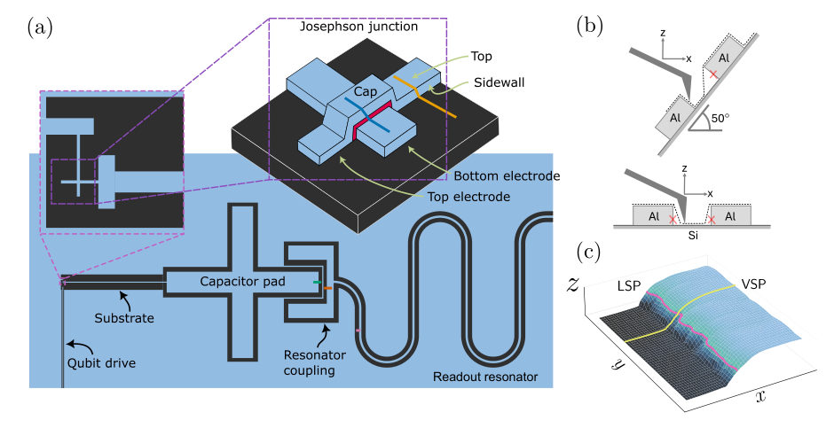
<figcaption class="paper-figure-caption"><b>Fig 1.</b> FIG. 1. (a) Blueprint of Al-based (blue color is Al) superconducting qubit investigated in the present study (device number 1-7). Each qubit comprises a cross-shaped capacitor pad connected via an Al/AlOx/Al Josephson junction to a surrounding Al layer. Each qubit is capacitively coupled (“resonator coupling”) to a readout resonator, and each readout resonator is inductively coupled to a feedline (not shown in the figure). A microwave driveline is capacitively coupled to the qubit island to enable controlled qubit driving (|0⟩→|1⟩). The five colored lines (two in zoom inset and three in the main figure) show the positions of sidewall profiles shown in Figs. 3 and 4. (b) Schematic of the...</figcaption>
</figure>
<figure class="paper-figure-card">
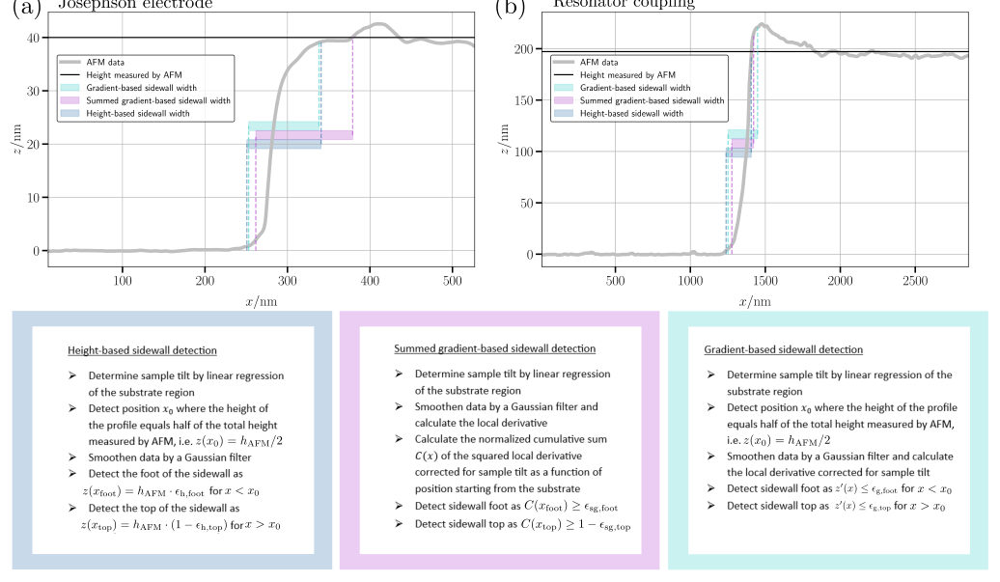
<figcaption class="paper-figure-caption"><b>Fig 2.</b> FIG. 2. (a) Example of a vertical sidewall profile of a Josephson junction electrode with indications of the detected sidewall region by use of the height-based method (shown in blue), summed gradient-based method (shown in magenta) and the gradient-based method (shown in turquoise). (b) Example of a vertical sidewall profile of a resonator coupling with indications of the detected sidewall region by use of the height-based method (shown in blue), summed gradient-based method (shown in magenta) and the gradient-based method (shown in turquoise). The three different methods are described in the text.</figcaption>
</figure>
<figure class="paper-figure-card">
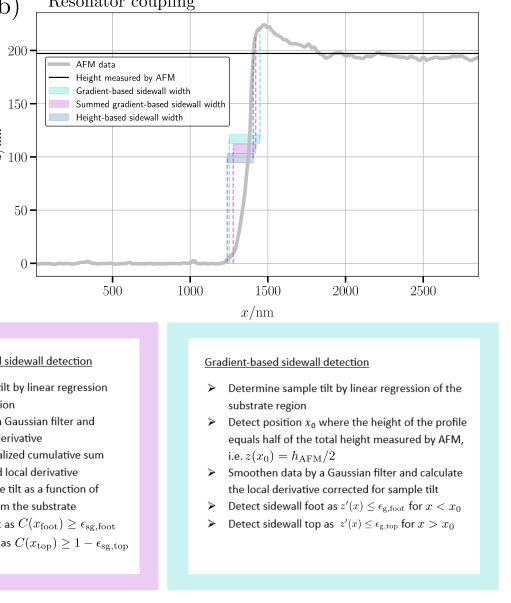
<figcaption class="paper-figure-caption"><b>Fig 3.</b> Figure 4 summarizes the observed vertical sidewall pro- files of a capacitor pad and the smaller Josephson junc- tion (JJ) electrode. A qualitative assessment gives that most profiles on the same chip are similar, however, one profile (Capacitor pad of device 4) is significantly differ- ent, indicating that a single profile of one edge is not sufficient to make a general statement about the angle and shape of the sidewall on the chip. The single profile of the capacitor (device 2) in panel (c) shows a distinct sharp protrusion near the top of the aluminum pad, with an observed local minimum ra- dius of ρOBS = −21.8 nm (negative for protrusions), which is equal to the conservative estimate...</figcaption>
</figure>
<figure class="paper-figure-card">
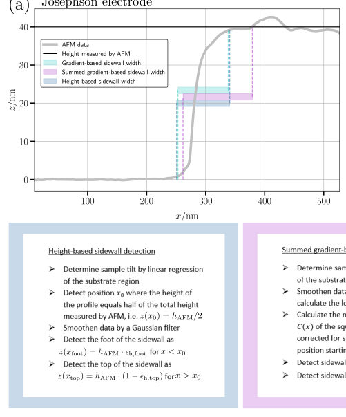
<figcaption class="paper-figure-caption"><b>Fig 4.</b> Figure 3 summarizes the AFM characterization of the lateral sidewall morphology for the investigated super- conducting qubits and readout resonators. The average lateral sidewall roughness, RLSP q , ranges from approxi- mately 2-5 nm for the Josephson junction structures to approximately 20 nm for the readout resonators. A side- wall with a visible local pit exhibits an increased rough- ness value of approximately 30 nm. The profile-to-profile variation of the extracted roughness values within the same image area, quantified by σ  RLSP q,i  , ranges from approximately 0.3–0.6 nm for the qubit components and up to approximately 5 nm for the readout resonators.</figcaption>
</figure>
<figure class="paper-figure-card">
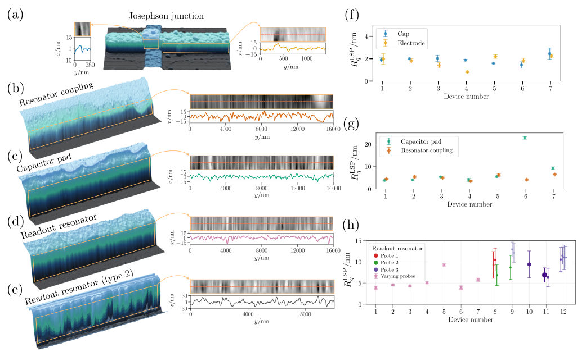
<figcaption class="paper-figure-caption"><b>Fig 5.</b> FIG. 3. (a)-(e) AFM height maps of various circuit components and their sidewalls. Orange windows indicate the locations of the in-plane profile variations shown in grayscale images next to the maps. A lateral sidewall profile XLSP,i(y) corresponding to the middle cut of the orange windows are indicated below each grayscale map. (f) Average sidewall roughness calculated from multiple sidewall profiles acquired across seven wet-etched transmon qubit devices. (g) Same as (f) for linear circuit elements. (h) Profile-averaged sidewall roughness calculated for the readout resonators of the same seven devices as measured in (f) and (g), as well as five additional readout resonators from an...</figcaption>
</figure>
</div>

<p><strong>Summary.</strong> This work establishes a quantitative, standardized protocol for measuring sidewall morphology in superconducting qubit devices using advanced scanning probe microscopy. By introducing new descriptors for roughness and curvature, the authors provide a foundation for comparing fabrication processes across different labs. This research links nanoscale geometry directly to potential sources of energy loss in quantum circuits.</p>
<p><strong>Why it may be interesting.</strong> While highly experimental, the focus on quantifying material interfaces and loss mechanisms in superconducting circuits directly impacts the coherence time ($T_1$) of qubits, which is central to quantum computation.</p>
<details>
<summary>Detailed structure</summary>
<p><strong>Main problem.</strong> Quantitatively characterizing sidewall morphology in superconducting qubit devices is challenging due to the lack of standardized measurement protocols, despite sidewall geometry potentially affecting qubit performance.</p>
<p><strong>Main result.</strong> The authors developed a comprehensive scanning probe microscopy framework introducing new quantitative descriptors like refined RMS lateral roughness and curvature-equivalent radius for standardized sidewall characterization.</p>
<p><strong>Method.</strong> The study uses Atomic Force Microscopy (AFM) with specialized configurations (tilted/3D) to measure sidewall profiles, developing specific protocols for data processing and artifact mitigation.</p>
<p><strong>Model / system.</strong> The physical system is superconducting qubit devices (e.g., Transmon qubits) and their associated Josephson junctions and resonators, where sidewall profiles are critical interfaces.</p>
<p><strong>Key observables.</strong> Refined root mean square lateral sidewall roughness descriptor (RLSP_q), curvature-equivalent radius (Rρ), and minimum radius of curvature (ρ_min).</p>
<p><strong>Important parameters / regimes.</strong> Dielectric loss ($rac{1}{T_{   ext{dielectric}}}$), electric field concentration, and the scale of roughness (e.g., 2-5 nm to 30 nm).</p>
<p><strong>Assumptions / limitations.</strong> The measured roughness is proposed as a <em>proxy</em> for underlying material/interface properties, not a direct measure of superconducting quality, and no universal monotonic relation to quality factors is expected.</p>
<p><strong>Figures summary.</strong> Figures illustrate the qubit blueprint, schematics for AFM measurement approaches (tilted/vertical profiles), and detailed analysis of sidewall profiles showing measured roughness and radii of curvature.</p>
<p><strong>Paper structure.</strong> The paper progresses from identifying the measurement gap to developing the quantitative descriptors (RLSP_q, Rρ), detailing the measurement procedures (AFM setup, probe correction), and finally discussing the implications for qubit loss mechanisms and measurement variability.</p>
</details>
<details>
<summary>Abstract</summary>
<p>Sidewall morphology is a potentially important factor influencing superconducting qubit performance, yet its quantitative characterization remains challenging due to the absence of standardized measurement protocols. In this work, we develop a scanning probe microscopy-based measurement framework for the quantitative characterization of superconducting qubit sidewalls. The framework introduces a refined root mean square lateral sidewall roughness descriptor and a new curvature-equivalent radius for quantifying vertical sidewall morphology. The descriptors and measurement procedures are applied to different components of qubit devices, forming the basis of a proposed sidewall characterization protocol. This provides a foundation for quantitative comparisons of fabrication processes across laboratories, enabling future investigations of correlations between sidewall geometry and qubit performance.</p>
</details>
<p><sub><a href="#top">↑ back to top</a></sub></p>

<p><a id="paper-2610.26413"></a></p>
<h3 id="two-qubit-cryo-cmos-control-of-a-spin-register-in-diamond"><a href="http://arxiv.org/abs/2610.26413v1">Two-qubit cryo-CMOS control of a spin register in diamond</a></h3>
<p><strong>Authors:</strong> H. B. van Ommen, N. E. Fakkel, M. van Riggelen, J. Yun, L. A. Enthoven, M. A. B. ElBadry, F. Sebastiano, M. Babaie, T. H. Taminiau<br>
<strong>Type:</strong> experiment · <strong>Category:</strong> quantum information and computing · <strong>PDF:</strong> <a href="https://arxiv.org/pdf/2610.26413v1">https://arxiv.org/pdf/2610.26413v1</a><br>
<strong>Analysis basis:</strong> full PDF text, analyzed in chunks
<strong>Topic relevance:</strong> 🔥 <code>QC/QI experiment</code> <strong>4/5</strong> · <code>quantum measurements</code> <strong>1/5</strong></p>
<div class="figure-strip-hint">↔ Scroll figures horizontally</div>
<div class="paper-figures-scroll">
<figure class="paper-figure-card">
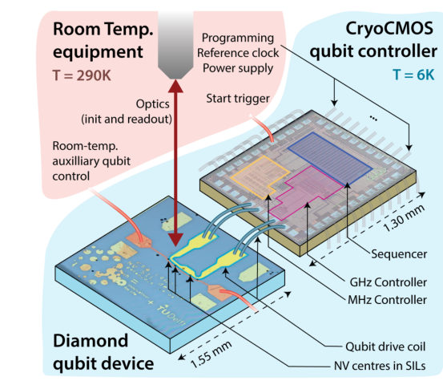
<figcaption class="paper-figure-caption"><b>Fig 1.</b> FIG. 1. Integrated qubit system. The cryo-CMOS qubit controller chip [23] and diamond qubit device hosting NV centres are placed together on a printed circuit board in a cryostat at 6 K. Solid Immer- sion Lenses are used to improve the optical collection efficiency of the NV centre emission. The CMOS chip autonomously performs a quantum circuit on the qubits. Qubit initialization and readout are performed by the room-temperature control system. Prior to cir- cuit runtime the CMOS chip is programmed to perform the desired quantum circuit(s). A reference clock, power supply, and a start- ing trigger are provided by external room-temperature systems. A magnetic field of 196 mT is applied...</figcaption>
</figure>
<figure class="paper-figure-card">
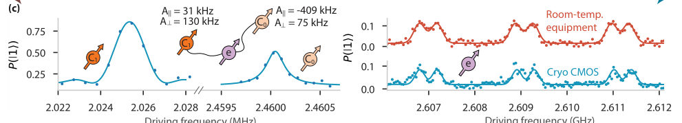
<figcaption class="paper-figure-caption"><b>Fig 2.</b> FIG. 2. CMOS controller architecture. a) The qubit controller is programmed prior to runtime by the host PC. This includes static configuration of the signal generators, the sequencer instruction memory, and the waveform memory. b) The digital sequencer follows the instructions contained in instruction memory. Most instructions lead to the writing of data to a configuration register (such as changing the GHz signal frequency) or triggering of either signal generation path to start waveform playback. The sequencer can be triggered by an external system to start executing instructions. The GHz signal generator controls the electron-spin qubit. In-phase (I) and Quadrature-phase (Q) signals are...</figcaption>
</figure>
<figure class="paper-figure-card">
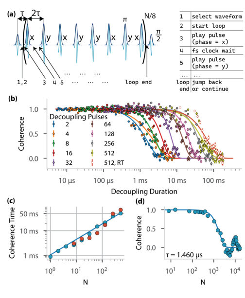
<figcaption class="paper-figure-caption"><b>Fig 3.</b> FIG. 3. Electron spin decoupling. a) Dynamical decoupling sequence to protect the electron-spin coherence, parametrized by τ (the time between the pulses) and N (the number of pulses). Total sequence time: T = 2Nτ. The XY8 sequence is robust to phase and am- plitude errors of the π pulses. On the right, we show the simpli- fied steps by which the XY8 sequence is efficiently programmed. b) Electron-spin coherence as a function of τ, for different N, us- ing CMOS control. For N = 512 a measurement using the room- temperature control system is also shown (open red circles). See Appendix B.1 for data processing details. c) Scaling of the coher- ence time T e 2 as a function of N. Blue (red)...</figcaption>
</figure>
<figure class="paper-figure-card">
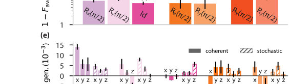
<figcaption class="paper-figure-caption"><b>Fig 4.</b> FIG. 4. Gate Set Tomography. a) Definition of the gate set. Electron- spin pulses are square. The identity gate consists of only an XY8 sequence, and is included to diagnose the fidelity of just the decou- pling sequence. The nuclear spin gates consist of a single square pulse. b) GST estimates process matrices of the entire gate set (in- cluding SPAM) by fitting a model of the gate set to data obtained by running specific diagnostic sequences on the quantum processing unit (QPU). c) For the electron-spin GST measurements the states of n, c0 and c1 were initialized alongside e by the room-temperature system. Then, the CMOS chip performed the GST sequence, after which the RT system performed...</figcaption>
</figure>
<figure class="paper-figure-card">
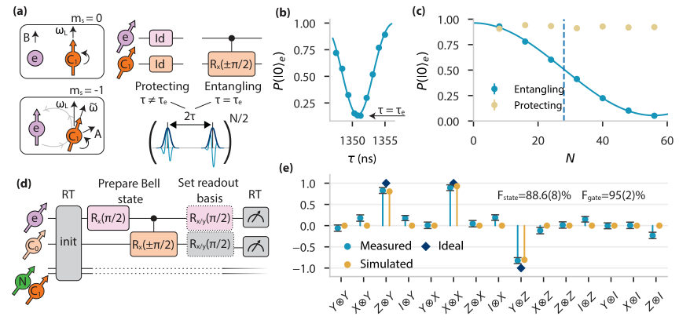
<figcaption class="paper-figure-caption"><b>Fig 5.</b> FIG. 5. Two-qubit gate. a) The two-qubit hyperfine interaction between the electron spin and nuclear spin can be utilized to form a two-qubit gate by applying a DD sequences with the appropriate interpulse delay τe. b) Electron-spin state after DD spectroscopy. The measurement sequence is: Rx(π/2)e −DD(τ, N = 44) −Rx(−π/2)e. Interaction between e and the uninitialized c1 during the DD sequence causes the characteristic dip in the DD spectrum. The centre of the dip defines the ideal τ = τe. c) To calibrate the DD gate, N is swept while keeping τ = τe. For comparison we also show the same N-sweep at a different τ, which simply protects the electron spin state. At N = 28 we perform the desired...</figcaption>
</figure>
</div>

<p><strong>Summary.</strong> This paper presents a breakthrough in quantum hardware integration by demonstrating two-qubit gate operations on diamond spin qubits using a custom cryo-CMOS controller. By integrating the classical control electronics directly with the quantum chip at cryogenic temperatures, the authors achieve high gate fidelities, marking a significant step toward scalable, practical quantum processors.</p>
<p><strong>Why it may be interesting.</strong> This work is highly relevant as it tackles the critical engineering bottleneck—the classical control electronics—for solid-state quantum computing platforms, which is a major focus area for quantum information scientists.</p>
<details>
<summary>Detailed structure</summary>
<p><strong>Main problem.</strong> The primary challenge addressed is developing scalable, efficient, and integrated classical control hardware necessary for utility-scale quantum technologies.</p>
<p><strong>Main result.</strong> The authors successfully demonstrated two-qubit gates on electron and nuclear spins in diamond using a cryo-CMOS controller, achieving an estimated two-qubit gate fidelity of 95(2)%.</p>
<p><strong>Method.</strong> The work involves integrating a custom cryo-CMOS ASIC with a diamond quantum device in a cryostat to perform precise pulse control, characterized using Gate Set Tomography (GST).</p>
<p><strong>Model / system.</strong> The physical system is a solid-state quantum register utilizing electron and nearby carbon nuclear spins within Nitrogen-Vacancy (NV) centers in diamond. Control is achieved via a cryo-CMOS controller generating both GHz (electron) and MHz (nuclear) pulses.</p>
<p><strong>Key observables.</strong> Two-qubit gate fidelity ($F_{2q,avg}$), Rabi frequencies ($\Omega_e, \Omega_{c0}, \Omega_{c1}$), and coherence times ($T_2$).</p>
<p><strong>Important parameters / regimes.</strong> Operating temperature ($\approx 6$ K), electron spin frequency ($f_e \approx 2.6 	ext{ GHz}$), and nuclear spin frequencies ($   ext{MHz}$ range).</p>
<p><strong>Assumptions / limitations.</strong> The core gate operations are performed cryogenically, though initialization and readout still require external room-temperature control. Heat generation from the CMOS chip is noted as a potential limitation.</p>
<p><strong>Figures summary.</strong> Figures illustrate the integrated setup in a cryostat, the detailed architecture of the CMOS controller (showing GHz and MHz paths), and measurements demonstrating coherence time scaling and gate fidelity characterization.</p>
<p><strong>Paper structure.</strong> The paper progresses from establishing the need for integrated control hardware to detailing the cryo-CMOS architecture, demonstrating single- and two-qubit gate operations, and concluding with the fidelity results for the integrated system.</p>
</details>
<details>
<summary>Abstract</summary>
<p>Utility-scale quantum technologies will not only require a well-performing quantum platform, but also classical control hardware that is scalable, efficient, and meets the design requirements set by the quantum system of interest. One approach is the application of silicon CMOS technology, a highly scalable and mature technology, to design application-specific integrated circuits (ASIC) that are optimized for the quantum system. In this work, we present two-qubit control of electron and nuclear spins in NV centres in diamond, using a cryogenic CMOS qubit controller integrated with a diamond quantum device in a cryostat. Using Gate Set Tomography (GST) we characterize the performance of the single-qubit gates on both electron- and carbon nuclear spins, and analyze the limiting noise processes. We use dynamical decoupling to engineer a two-qubit gate, and estimate $F_\text{2q,avg} = 95(2)\%$ for the electron-nuclear two-qubit gate fidelity. Our demonstration of cryo-CMOS-driven two-qubit gates is a key step towards highly-integrated quantum devices based on colour centres.</p>
</details>
<p><sub><a href="#top">↑ back to top</a></sub></p>

<p><a id="paper-2610.24196"></a></p>
<h3 id="nonlocality-as-a-benchmarking-tool-for-quantum-processors"><a href="http://arxiv.org/abs/2610.24196v1">Nonlocality as a Benchmarking Tool for Quantum Processors</a></h3>
<p><strong>Authors:</strong> Andrés Camilo Granda Arango, Carla Sophie Rieger, Carlo Cuccu, Giuseppe Sergioli, Luigi Iapichino, Tobias Valentin Bauer, Roberto Giuntini, Federico Hernán Holik<br>
<strong>Type:</strong> both · <strong>Category:</strong> quantum information and computing · <strong>PDF:</strong> <a href="https://arxiv.org/pdf/2610.24196v1">https://arxiv.org/pdf/2610.24196v1</a><br>
<strong>Analysis basis:</strong> full PDF text, analyzed in chunks
<strong>Topic relevance:</strong> 🔥 <code>QC/QI experiment</code> <strong>4/5</strong></p>
<div class="figure-strip-hint">↔ Scroll figures horizontally</div>
<div class="paper-figures-scroll">
<figure class="paper-figure-card">
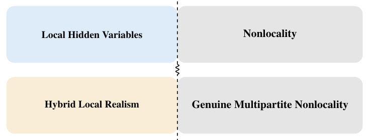
<figcaption class="paper-figure-caption"><b>Fig 1.</b> Figure 1. Regions defined by the classical bound of each inequality. For Mermin, exceeding the bound indicates incompatibility with fully local hidden-variable models. For Svetlichny, it indicates incompatibility with all hybrid local-realistic decompositions, consistent with genuine multipartite nonlocality.</figcaption>
</figure>
<figure class="paper-figure-card">
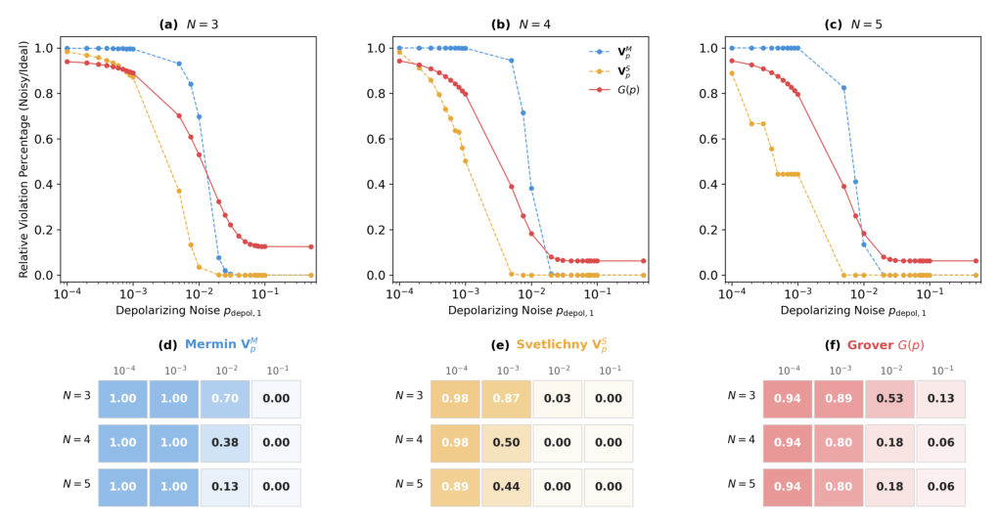
<figcaption class="paper-figure-caption"><b>Fig 2.</b> Figure 2. Comparison between the relative violation percentage of Svetlichny’s inequality, that of Mermin’s, and algorithmic success probability of Grover’s algorithm for (a) N = 3, (b) N = 4, and (c) N = 5 under varying one-qubit depolarizing noise pdepol,1 and two-qubit depolarizing noise pdepol,2 = 2pdepol,1. For this simulation, 104</figcaption>
</figure>
<figure class="paper-figure-card">
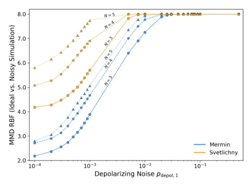
<figcaption class="paper-figure-caption"><b>Fig 3.</b> Figure 3. Evaluating the MMD with a Gaussian kernel as defined in Eq. (7) between the ideal (simulated) and noisy violation distributions for N = 3,4,5 qubits based on 104 samples while varying over the depolarizing noise for one and two qubits, respectively. The simulation is using 103 shots.</figcaption>
</figure>
<figure class="paper-figure-card">
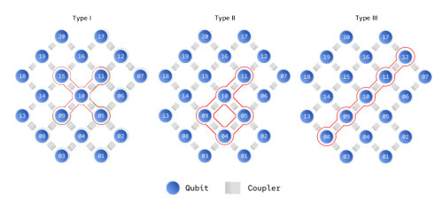
<figcaption class="paper-figure-caption"><b>Fig 4.</b> Figure 4. Examples of connectivity configurations for a five-qubit system. Connectivity layout adapted from IQM (Garnet QPU)43. Highlighted qubit subsets and red connections added by the authors.</figcaption>
</figure>
<figure class="paper-figure-card">
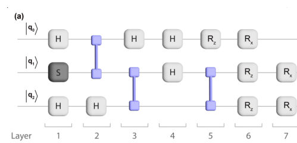
<figcaption class="paper-figure-caption"><b>Fig 5.</b> Figure 5. Quantum circuits for N = 3 qubits with the same theoretical Svetlichny violation (4 √</figcaption>
</figure>
</div>

<p><strong>Summary.</strong> This paper proposes using the violation of the Svetlichny inequality as a rigorous benchmark to assess the genuine multipartite nonlocality of quantum processors. By testing superconducting and ion-trap systems, the authors demonstrate that this nonlocality test is a powerful metric for characterizing collective hardware performance, guiding calibration, and distinguishing true quantum capabilities from classical limits.</p>
<p><strong>Why it may be interesting.</strong> It provides a concrete, physics-based diagnostic tool (nonlocality violation) that can be directly applied to characterize and optimize the performance of near-term quantum hardware platforms like trapped ions and superconducting circuits.</p>
<details>
<summary>Detailed structure</summary>
<p><strong>Main problem.</strong> The paper addresses the critical need to benchmark quantum processors by developing a protocol based on testing for genuine multipartite nonlocality (GMNL).</p>
<p><strong>Main result.</strong> Tests based on the Svetlichny inequality provide a powerful and superior tool compared to Mermin's inequality for characterizing the collective performance and guiding the calibration of quantum devices.</p>
<p><strong>Method.</strong> The authors compare the violation of the Svetlichny inequality against Mermin's inequality using both theoretical simulations and experimental data from superconducting and ion-trap quantum processors.</p>
<p><strong>Model / system.</strong> The study tests two distinct quantum processing units: the superconducting Garnet system and the ion-trap Marmot system. Benchmarking is performed on three to five qubits using families of quantum circuits built with Clifford and universal gates.</p>
<p><strong>Key observables.</strong> Violation of the Svetlichny inequality (ruling out Hybrid Local-Realistic models) and Mermin's inequality, quantified by relative violation percentages ($V_r(p)$).</p>
<p><strong>Important parameters / regimes.</strong> Number of qubits (3 to 5), depolarizing noise parameter ($p$), and the specific quantum circuit family used.</p>
<p><strong>Assumptions / limitations.</strong> The test simulates nonlocality because physical constraints (colocated qubits) prevent achieving true space-like separation, meaning the result is interpreted as a measure of contextuality rather than a loophole-free Bell test.</p>
<p><strong>Figures summary.</strong> Figures compare relative violation percentages for Svetlichny, Mermin, and Grover's algorithm success probability across varying noise levels and qubit numbers.</p>
<p><strong>Paper structure.</strong> The paper introduces the theoretical background of the inequalities (Mermin vs. Svetlichny), presents experimental results comparing the two architectures (Marmot and Garnet) using specific circuits, and concludes by establishing the nonlocality test as a robust performance metric.</p>
</details>
<details>
<summary>Abstract</summary>
<p>Benchmarking quantum processors is a central task in every roadmap aimed at quantum advantage. Here, we discuss a benchmarking protocol based on the violation of the Svetlichny inequality, which is designed to simulate genuine multipartite nonlocality. We compare it with Mermin's inequality, and present the results of applying this framework to two different quantum processing units -the superconducting system Garnet (from IQM) and the ion-trap system Marmot (from AQT), testing different families of quantum circuits for three to five qubits under identical experimental conditions. We also run simultaneous triplet tests across the full register, including a comparison between GHZ and linear cluster states, to probe how Svetlichny-inequality violations depend on qubit location and calibration. Our results demonstrate that tests based on genuine multipartite nonlocality provide a powerful tool to characterize the collective performance of quantum devices and to guide their calibration and optimization.</p>
</details>
<p><sub><a href="#top">↑ back to top</a></sub></p>

<p><a id="paper-2610.24956"></a></p>
<h3 id="chiral-floquet-selection-of-an-algebraic-rydberg-bound-state-in-the-continuum"><a href="http://arxiv.org/abs/2610.24956v1">Chiral Floquet Selection of an Algebraic Rydberg Bound State in the Continuum</a></h3>
<p><strong>Authors:</strong> X. Z. Zhang, X. F. ZHang, M. W. Liu<br>
<strong>Type:</strong> theory · <strong>Category:</strong> other · <strong>PDF:</strong> <a href="https://arxiv.org/pdf/2610.24956v1">https://arxiv.org/pdf/2610.24956v1</a><br>
<strong>Analysis basis:</strong> full PDF text, analyzed in chunks
<strong>Topic relevance:</strong> <code>Rydberg arrays</code> <strong>3/5</strong> · <code>analog quantum simulation</code> <strong>3/5</strong> · <code>correlated / nonlocal dissipation</code> <strong>3/5</strong> · <code>driven-dissipative phase transition</code> <strong>3/5</strong> · <code>methods for driven-dissipative</code> <strong>3/5</strong> · <code>Keldysh / 2PI / non-Gaussian methods</code> <strong>2/5</strong> · <code>non-equilibrium universality</code> <strong>2/5</strong> · <code>interference shaping light</code> <strong>1/5</strong></p>
<div class="figure-strip-hint">↔ Scroll figures horizontally</div>
<div class="paper-figures-scroll">
<figure class="paper-figure-card">
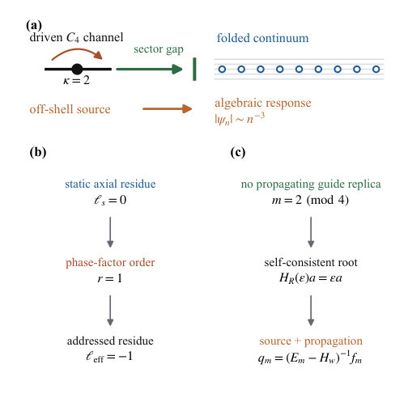
<figcaption class="paper-figure-caption"><b>Fig 1.</b> FIG. 1. Floquet symmetry separates radiation from the long- range bound response. (a) A winding-driven C4 mode belongs to a joint sector whose accessible guide replicas are gapped even though other sectors form a folded continuum; the non- propagating coupling remains long ranged. (b) The axial static channel has ℓs = 0, and phase-factor order r = 1 couples to the angular component ℓeff = −1. (c) The complete state, including its waveguide component, is nonradiating because no propagating guide replica is available in its κ = 2 sector, while its bound guide component obeys qm = (Em −Hw)−1fm. An embedded eigenstate must also satisfy the real self-consistent eigenvalue equation.</figcaption>
</figure>
<figure class="paper-figure-card">
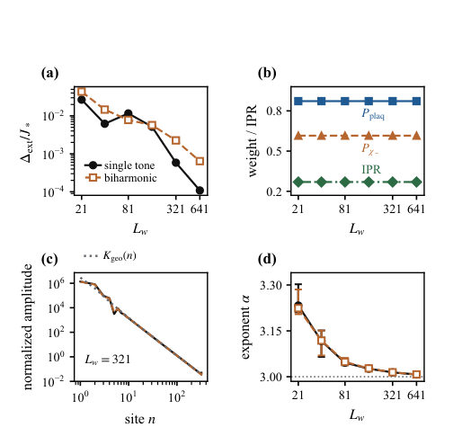
<figcaption class="paper-figure-caption"><b>Fig 2.</b> FIG. 2. Spectral proximity and algebraic localization of the same Floquet branch. (a) Periodic quasienergy distance ∆ext to the waveguide-like extended subset for the single-tone and bi- harmonic drives. (b) Plaquette weight, target-chirality weight, and IPR of the single-tone branch. (c) Lw = 321 snapshot amplitudes for both waveforms and the geometrical reference Kgeo, each normalized at n = 108; colors and markers follow panel (a). (d) Amplitude exponents fitted in interior window WB, with whiskers spanning windows WA–WC of Supplemen- tal Material, Sec. VIII. The guide has open ends and uses Ω/J∗= 1.21, z1 = 1.1, and z2 = 0 or 0.1.</figcaption>
</figure>
<figure class="paper-figure-card">
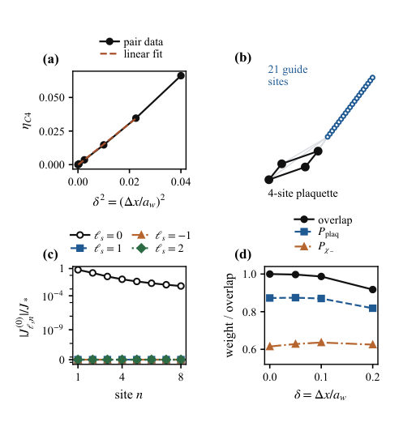
<figcaption class="paper-figure-caption"><b>Fig 3.</b> FIG. 3. Axial angular channel and its symmetry-breaking response. (a) A transverse displacement produces a quadratic onset of the unwanted-to-target static angular-channel power ratio ηC4; the dashed line fits the small-displacement regime. (b) Schematic view of the 25-atom geometry, with the four-site plaquette enlarged for visibility. (c) At the axial point, the direct ARC exchange has a finite ℓs = 0 component while the ℓs = ±1, 2 components vanish to numerical precision. (d) The finite Floquet branch remains continuously connected to the axial state over the plotted displacement range. Panels (a,c) use the static contacts to the first eight guide sites at B = 20 G; panel (b) shows the...</figcaption>
</figure>
</div>

<p><strong>Summary.</strong> This paper analyzes the existence and properties of an algebraic Floquet Bound State in the Continuum (BIC) within a Rydberg waveguide coupled to a plaquette. By applying Floquet theory and symmetry analysis, the authors demonstrate that the bound state retains a characteristic inverse-cube spatial decay signature even when symmetry forbids all radiative decay channels. This confirms the robustness of localized quantum features in complex, driven quantum architectures.</p>
<p><strong>Why it may be interesting.</strong> This work provides a detailed theoretical understanding of how topological or symmetry constraints can enforce robust, localized quantum states (BICs) in open, driven quantum systems, which is highly relevant for designing robust quantum emitters or waveguides.</p>
<details>
<summary>Detailed structure</summary>
<p><strong>Main problem.</strong> The study investigates how a bound state embedded in the continuum (BIC) maintains its spatial localization signature when its radiation channels are forbidden by symmetry in a driven system.</p>
<p><strong>Main result.</strong> The system supports an algebraic Floquet BIC whose nonradiating waveguide amplitude decays as $n^{-3}$, confirming the persistence of long-range coupling signatures even when radiation is symmetry-forbidden.</p>
<p><strong>Method.</strong> The analysis employs Floquet theory, Green's function techniques, and Feshbach projection methods to separate the bound state response from the continuum of propagating modes.</p>
<p><strong>Model / system.</strong> The model is a Hermitian Rydberg spin waveguide coupled to a four-site plaquette, driven by a winding phase. The system is analyzed in the Floquet framework to study quasienergy eigenstates.</p>
<p><strong>Key observables.</strong> Nonradiating waveguide amplitude decay exponent ($\alpha \approx 3$), the static unwanted-channel ratio ($\eta_{C4}$), and the state overlap ($O_{ax}$).</p>
<p><strong>Important parameters / regimes.</strong> Winding drive phase, transverse displacement ($\delta$), and the guide length ($L_w$).</p>
<p><strong>Assumptions / limitations.</strong> The analysis assumes the guide is semi-infinite for asymptotic decay calculations and relies on symmetry conditions to forbid propagating guide replicas.</p>
<p><strong>Figures summary.</strong> Figures illustrate how Floquet symmetry separates radiation from the bound response, detail the algebraic decay of the nonradiating amplitude, and show the quadratic onset of symmetry-breaking effects ($\eta_{C4} \propto \delta^2$) upon transverse displacement.</p>
<p><strong>Paper structure.</strong> The paper progresses by establishing the BIC concept in driven systems, calculating the guide response using Green's functions, quantifying the algebraic decay exponent, and finally analyzing the robustness of this state against symmetry-breaking perturbations via transverse displacement.</p>
</details>
<details>
<summary>Abstract</summary>
<p>Bound states in the continuum (BICs) remain localized despite the presence of extended modes at the same energy. In driven systems with long-range couplings, the absence of radiation does not by itself determine how a bound state decays in space. We study a Hermitian Rydberg spin waveguide coupled to a four-site plaquette, where a winding drive phase combines rotation with time translation to forbid propagating guide channels in one symmetry sector. The resulting eigenstate remains embedded in the continuum of other sectors and carries an inverse-cube waveguide amplitude, with coherent contributions from direct plaquette--guide coupling and long-range guide propagation. Pair-state calculations determine the microscopic couplings in the axial geometry, while coherent Floquet mixing sets the weight of the dominant circulating plaquette mode. The bound state thus retains the spatial signature of the long-range coupling even when radiation is forbidden.</p>
</details>
<p><sub><a href="#top">↑ back to top</a></sub></p>

<p><a id="paper-2610.25310"></a></p>
<h3 id="anomalously-fast-heating-of-ground-states-in-dephased-math213math-spin-systems"><a href="http://arxiv.org/abs/2610.25310v1">Anomalously fast heating of ground states in dephased $SU(N)$ spin systems</a></h3>
<p><strong>Authors:</strong> Tairan Lou, Junxiao Chen, Xiang-Ping Jiang, Mingdi Xu, Lei Pan<br>
<strong>Type:</strong> theory · <strong>Category:</strong> statistical mechanics · <strong>PDF:</strong> <a href="https://arxiv.org/pdf/2610.25310v1">https://arxiv.org/pdf/2610.25310v1</a><br>
<strong>Analysis basis:</strong> full PDF text, analyzed in chunks
<strong>Topic relevance:</strong> <code>correlated / nonlocal dissipation</code> <strong>3/5</strong> · <code>driven-dissipative phase transition</code> <strong>3/5</strong> · <code>methods for driven-dissipative</code> <strong>3/5</strong> · <code>non-equilibrium universality</code> <strong>3/5</strong> · <code>scars &amp; prethermalization</code> <strong>3/5</strong> · <code>Keldysh / 2PI / non-Gaussian methods</code> <strong>2/5</strong> · <code>analog quantum simulation</code> <strong>1/5</strong> · <code>quantum measurements</code> <strong>1/5</strong></p>
<div class="figure-strip-hint">↔ Scroll figures horizontally</div>
<div class="paper-figures-scroll">
<figure class="paper-figure-card">
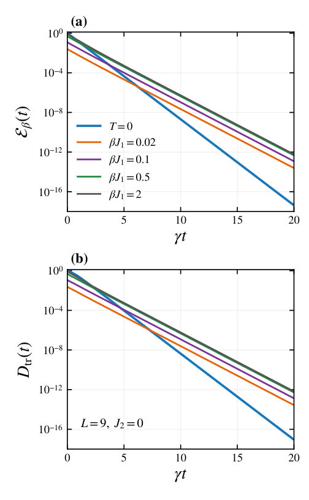
<figcaption class="paper-figure-caption"><b>Fig 1.</b> FIG. 1. Anomalously fast ground-state heating at L = 9, N = (3, 3, 3), J2 = 0, and γ/J1 = 0.4. (a) Commonly normalized energy deviation Eβ [Eq. (5)], computed by propagating the Gibbs family in the exact symmetry quotient. (b) Trace distance of the evolved states, evaluated in all translation blocks. Thermal trajectories are propagated directly through γt = 20; ground-state curves use the exact shell solution. The finite temperatures are βJ1 = 0.02, 0.1, 0.5, 2. The zero- temperature state starts farther away in both diagnostics and overtakes each plotted thermal state; its energy follows ED = e−2γt. The continuous-temperature statement follows from Sec. IV.</figcaption>
</figure>
<figure class="paper-figure-card">
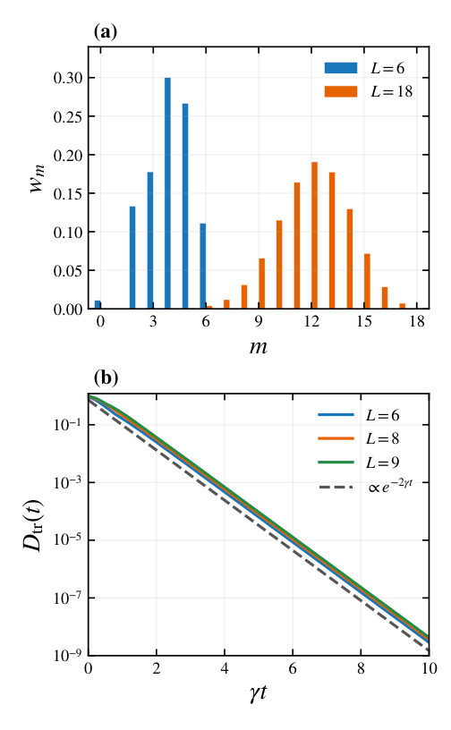
<figcaption class="paper-figure-caption"><b>Fig 2.</b> FIG. 2. Exact coherence-shell weights and ground-state relax- ation. (a) Squared shell coefficients wm = nm/D2 N at balanced L = 6 and 18, obtained by exact integer counting in Eq. (B5). The large-size weights follow from shell counting and do not require the Liouvillian spectrum. Both even and odd teeth occur. (b) Dicke-state trace distance for L = 6, 8, 9, with nearest-balanced occupations. The dashed line indicates the exact leading exponent 2γ.</figcaption>
</figure>
<figure class="paper-figure-card">
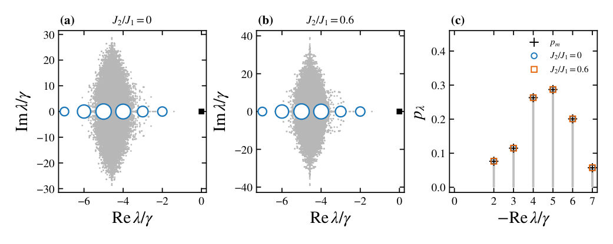
<figcaption class="paper-figure-caption"><b>Fig 3.</b> FIG. 3. Dicke-state support in the complete Liouvillian spectrum at L = 7, N = (3, 2, 2), and γ/J1 = 0.4. (a,b) All D2 N eigenvalues for J2/J1 = 0 and 0.6 are obtained by diagonalizing every translation and cyclic-color character block and combining their complete spectra. Gray points show the surrounding spectrum; blue circles mark the occupied comb teeth, with area proportional to pλ. The black square is the stationary eigenvalue, removed from ρD −ρss. (c) Projection weights evaluated by polynomial spectral projectors on the verified reducing shell span agree with the exact weights. Appendix B describes the projector construction and an independent five-site dual-basis calculation. The...</figcaption>
</figure>
<figure class="paper-figure-card">
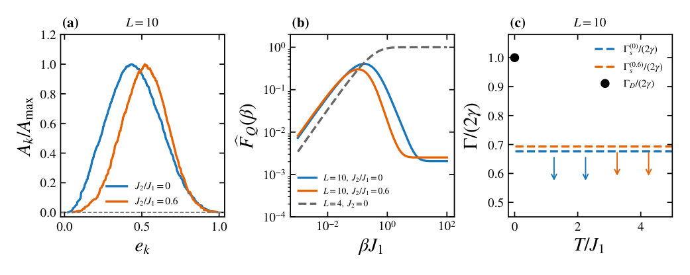
<figcaption class="paper-figure-caption"><b>Fig 4.</b> FIG. 4. Continuous-temperature criterion at L = 10. (a) Energy-band cumulative weights for both exchange choices, normalized by Amax, with ek = (Ek −E0)/(EM −E0). Every interior cumulative is positive. (b) Rescaled overlap bFQ = ZβeβE1FQ/Amax from the same complete bands. The four-site expression is retained as a dashed analytic reference. (c) Temperature-independent upper bounds Γfilt(ρβ) ≤Γ(J2) s obtained from the two ten-site witnesses, compared with the exact ground-state rate. Downward arrows indicate the bound; the lines are not fitted thermal exponents. The four-site algebraic proof is given in Appendix D. The point at T = 0 represents the Dicke preparation. All panels use γ/J1 = 0.4.</figcaption>
</figure>
<figure class="paper-figure-card">
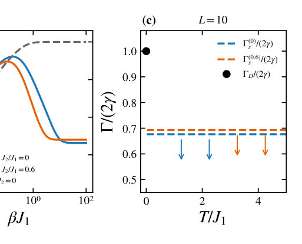
<figcaption class="paper-figure-caption"><b>Fig 5.</b> Figure 8(c) tracks the departure from protected dynamics. If as vanishes as a power of ϵ, Eq. (17) gives a logarith- mically growing acceleration interval as the perturbation</figcaption>
</figure>
</div>

<p><strong>Summary.</strong> This paper studies the non-equilibrium dynamics of dephased SU(N) spin systems, revealing a strong quantum Mpemba effect. It proves that the ground state heats up anomalously fast compared to any finite-temperature Gibbs state. The findings establish a robust, size-independent rate separation between the ground state and thermal relaxation channels.</p>
<p><strong>Why it may be interesting.</strong> This work provides a rigorous theoretical demonstration of non-equilibrium dynamics where the zero-temperature limit exhibits unique, faster relaxation dynamics compared to thermal ensembles, which is highly relevant to understanding thermalization in open quantum systems.</p>
<details>
<summary>Detailed structure</summary>
<p><strong>Main problem.</strong> The paper investigates an anomalous quantum Mpemba effect, where the ground state of a many-body system heats faster than any finite-temperature Gibbs state under specific dissipative dynamics.</p>
<p><strong>Main result.</strong> The ground state evolution rate is fixed by the bath and is shown to be strictly faster than the thermal relaxation rate for positive temperatures, demonstrating a rate inversion.</p>
<p><strong>Method.</strong> The analysis uses the Lindblad master equation formalism, deriving exact solutions for the ground state evolution via a 'shell identity' and employing spectral projection methods to compare decay rates.</p>
<p><strong>Model / system.</strong> The system is a ferromagnetic SU(N) exchange chain subjected to local color dephasing, modeled by a Hamiltonian and a Lindblad dissipator. The dynamics are analyzed within a fixed-color sector.</p>
<p><strong>Key observables.</strong> Trace distance ($D_{tr}(t)$) and normalized energy deviation ($E_eta(t)$) are used to quantify the rate of relaxation and heating.</p>
<p><strong>Important parameters / regimes.</strong> The dephasing rate ($\gamma$), the temperature parameter ($eta$), and the exchange couplings ($J_1, J_2$) are key parameters.</p>
<p><strong>Assumptions / limitations.</strong> The analysis is restricted to a fixed-color sector, and the rate comparison relies on establishing a sign criterion for the thermal contribution.</p>
<p><strong>Figures summary.</strong> Figures compare the energy deviation and trace distance for the ground state versus various finite temperatures, visually confirming the ground state's faster decay rate.</p>
<p><strong>Paper structure.</strong> The paper progresses from identifying the anomalous heating effect to deriving the exact ground-state evolution using shell identities, establishing the rate separation via spectral analysis, and confirming the results with specific observable measurements.</p>
</details>
<details>
<summary>Abstract</summary>
<p>We identify a strong quantum Mpemba effect in which a many-body ground state heats faster than every Gibbs state at finite positive temperature under the same dissipative dynamics within a fixed-color sector. In ferromagnetic $SU(N)$ exchange systems with local dephasing, exact coherence shells confine the ground-state evolution and exclude all slower Liouvillian modes. Its relaxation rate is fixed by the bath, independently of system size, exchange graph, and integrability. We derive an energy-resolved sign criterion that guarantees a slower thermal contribution throughout the positive-temperature range. An exact finite-chain solution proves this rate inversion, and symmetry-resolved calculations confirm the criterion in larger spin-one chains, including nonintegrable exchange. The zero-temperature endpoint of a continuous Gibbs family can therefore be dynamically isolated by its exact exclusion from slow relaxation channels.</p>
</details>
<p><sub><a href="#top">↑ back to top</a></sub></p>

<p><a id="paper-2610.26126"></a></p>
<h3 id="enhanced-charging-in-open-rabi-and-dicke-quantum-batteries"><a href="http://arxiv.org/abs/2610.26126v1">Enhanced charging in open Rabi and Dicke quantum batteries</a></h3>
<p><strong>Authors:</strong> A-Long Zhou, Nuo Xu, Ya-Wen Xiao, Li-Li Gao, Long-Jie Li, Zi-Min Li, Chuan-Cun Shu<br>
<strong>Type:</strong> theory · <strong>Category:</strong> other · <strong>PDF:</strong> <a href="https://arxiv.org/pdf/2610.26126v1">https://arxiv.org/pdf/2610.26126v1</a><br>
<strong>Analysis basis:</strong> full PDF text, analyzed in chunks
<strong>Topic relevance:</strong> <code>Dicke superradiance</code> <strong>3/5</strong> · <code>Tavis-Cummings &amp; cavity-many-emitter</code> <strong>3/5</strong> · <code>driven-dissipative phase transition</code> <strong>3/5</strong> · <code>methods for driven-dissipative</code> <strong>3/5</strong> · <code>correlated / nonlocal dissipation</code> <strong>2/5</strong> · <code>non-equilibrium universality</code> <strong>2/5</strong> · <code>Keldysh / 2PI / non-Gaussian methods</code> <strong>1/5</strong> · <code>analog quantum simulation</code> <strong>1/5</strong> · <code>quantum measurements</code> <strong>1/5</strong></p>
<div class="figure-strip-hint">↔ Scroll figures horizontally</div>
<div class="paper-figures-scroll">
<figure class="paper-figure-card">
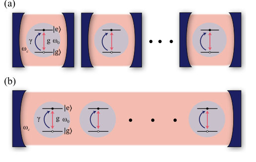
<figcaption class="paper-figure-caption"><b>Fig 1.</b> FIG. 1. Schematic illustration of the open quantum battery models under direct incoherent pumping. (a) Independent Rabi reference composed of identical units, each containing one cavity mode and one TLS. The units have separate cavi- ties and local pumps and do not interact. Each unit has cav- ity frequency ωc, TLS transition frequency ω0, light–matter coupling strength g, and local pump parameter γ. (b) Dicke battery in which all TLSs couple to one common cavity mode and receive identical local pumps. The Hamiltonian contains no direct interaction among the TLSs; the common cavity me- diates their correlations. In both panels, the curved arrows denote the local incoherent excitation...</figcaption>
</figure>
<figure class="paper-figure-card">
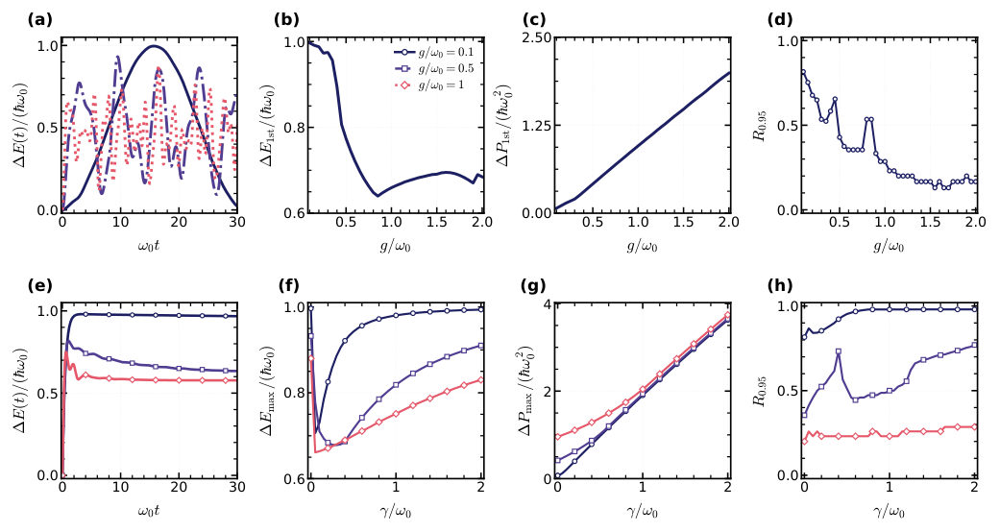
<figcaption class="paper-figure-caption"><b>Fig 2.</b> FIG. 2. Rabi battery charging benchmarks for the Hermitian reference and full-Lindblad protocol at exact resonance and fixed initial state |ψ(0)⟩= |1⟩c ⊗|g⟩B. Panels (a)–(d) show the Hermitian reference: (a) charging dynamics for g/ω0 = 0.1, 0.5, 1, (b) first-cycle charging energy, (c) first-cycle average power, and (d) timing robustness R0.95 as functions of g/ω0. Panels (e)–(h) show the physical Lindblad protocol: (e) charging dynamics at fixed γ/ω0 = 1 for the same three couplings, followed by (f) maximum stored energy, (g) maximum average charging power, and (h) R0.95 as functions of γ/ω0. In the discrete three- coupling comparisons, colors encode g/ω0 = 0.1, 0.5, 1 from purple to red;...</figcaption>
</figure>
<figure class="paper-figure-card">
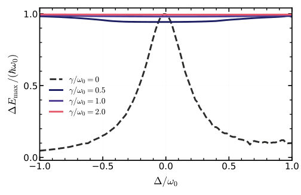
<figcaption class="paper-figure-caption"><b>Fig 3.</b> FIG. 3. Maximum stored energy of the Rabi battery as a function of detuning at the reference coupling g/ω0 = 0.1. The dashed black curve is the Hermitian reference, and the colored solid curves are the physical Lindblad results for γ/ω0 = 0.5, 1, 2 over ∆/ω0 ∈[−1, 1]. Direct incoherent pump- ing replaces the sharp Hermitian resonance peak by a broad high-energy region.</figcaption>
</figure>
<figure class="paper-figure-card">
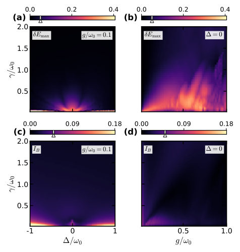
<figcaption class="paper-figure-caption"><b>Fig 4.</b> FIG. 4. Observable-level usage map of the conditioned non- Hermitian description for the Rabi battery. Panels (a) and (b) show the peak-energy discrepancy δEmax = |∆Enj max−∆EME max| in units of ℏω0 over the (∆, γ) and (g, γ) planes, respec- tively, where nj and ME denote the conditioned no-jump and Lindblad master-equation results. Panels (c) and (d) show the time-averaged reduced-battery-state infidelity IB between the same two evolutions over the corresponding parameter planes. The fidelity is sampled uniformly over tj ∈[0, tcut], with tcutω0 = 50 and Nt = 201, after tracing out the cav- ity. In panels (a) and (c), g/ω0 = 0.1; in panels (b) and (d), ∆= 0. The two panels in each row share...</figcaption>
</figure>
<figure class="paper-figure-card">
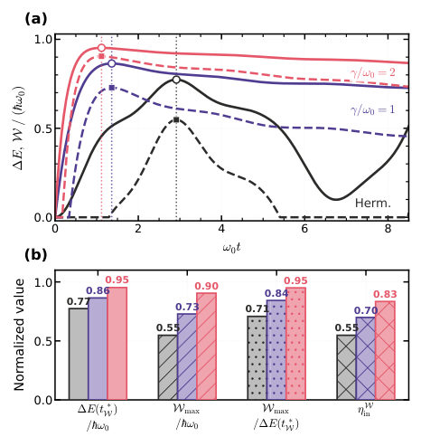
<figcaption class="paper-figure-caption"><b>Fig 5.</b> FIG. 5. Operational comparison via ergotropy with input bookkeeping for the Rabi battery at g/ω0 = 0.5. In panel (a), solid and dashed curves denote the stored energy ∆E(t) and ergotropy W(t), respectively; black, purple, and red iden- tify the Hermitian reference and the pumped protocols at γ/ω0 = 1 and 2. Open circles and filled squares mark ∆E and W at the ergotropy-optimal time t∗ W, also indicated by the vertical dotted lines. Panel (b) groups ∆E(t∗ W), Wmax, Wmax/∆E(t∗ W), and the adopted input-normalized ergotropy yield ηW in by horizontal position; within each group the black– purple–red order identifies the protocols, and hatching pro- vides a redundant metric cue. The first two...</figcaption>
</figure>
</div>

<p><strong>Summary.</strong> This paper analyzes how direct incoherent pumping enhances the charging capabilities of Rabi and Dicke quantum batteries. Using the Lindblad master equation, the authors show that pumping stabilizes energy storage and increases extractable energy (ergotropy) in these open quantum systems. The findings provide a theoretical route for improving quantum energy harvesting in cavity QED setups.</p>
<p><strong>Why it may be interesting.</strong> This work directly addresses open quantum system dynamics, energy storage, and non-equilibrium physics in quantum optics, making it highly relevant for AMO theorists studying cavity QED and quantum energy harvesting.</p>
<details>
<summary>Detailed structure</summary>
<p><strong>Main problem.</strong> The paper investigates enhanced charging protocols for Rabi and Dicke quantum batteries operating in open quantum systems subjected to direct incoherent pumping.</p>
<p><strong>Main result.</strong> Direct incoherent pumping stabilizes the charging dynamics in both Rabi and finite Dicke quantum batteries, improving stored energy, ergotropy, and robustness against errors compared to Hermitian references.</p>
<p><strong>Method.</strong> The dynamics are modeled using the Lindblad master equation, supplemented by analysis using effective non-Hermitian generators for the conditioned no-jump mechanism.</p>
<p><strong>Model / system.</strong> The models include the Rabi battery (TLS coupled to a single bosonic mode) and the Dicke battery (N coupled TLSs to a common bosonic mode). The dynamics are governed by Hamiltonians and Lindblad dissipation terms.</p>
<p><strong>Key observables.</strong> Charging Energy ($\Delta E$), Average Charging Power ($\Delta P$), Maximum Stored Energy ($\Delta E_{\max}$), Ergotropy ($W$), and Timing Robustness ($R_{0.95}$).</p>
<p><strong>Important parameters / regimes.</strong> Pumping rate ($\gamma$), coupling strength ($g$), detuning ($\Delta$), and the pump-input bound.</p>
<p><strong>Assumptions / limitations.</strong> The analysis distinguishes between the full Lindblad evolution and the auxiliary conditioned no-jump descriptions; approximations include the Rotating-Wave Approximation (RWA) in some contexts.</p>
<p><strong>Figures summary.</strong> Figure 1 schematically illustrates the open quantum battery models (Rabi and Dicke) under direct incoherent pumping.</p>
<p><strong>Paper structure.</strong> The paper develops the theoretical framework using the Lindblad master equation to track charging metrics. It then analyzes the specific behavior of the Rabi and Dicke models, comparing pumping effects against Hermitian limits and examining various performance diagnostics.</p>
</details>
<details>
<summary>Abstract</summary>
<p>We investigate open-system charging protocols for Rabi and Dicke quantum batteries under direct incoherent pumping. The charging dynamics follows a Lindblad master equation, while effective non-Hermitian generators describe the conditioned no-jump mechanism. For a single Rabi battery, this pumping suppresses coherent energy backflow, broadens the high-energy charging window, and improves robustness against both timing errors and detuning. At the selected Rabi operating points, pumping also increases ergotropy and the extractable fraction of the stored energy. For finite Dicke batteries, direct incoherent pumping likewise stabilizes the charging dynamics. Across the finite-size scan, the strongest pump considered improves the peak stored energy and ergotropy per cell and near-peak timing robustness relative to the Hermitian reference. The maximum average charging power also increases, although this metric includes pump-assisted jump contributions. Equal-input comparisons show that the relative performance of common-cavity Dicke and independent Rabi batteries varies with the pump-input bound. Taken together, these results show that direct incoherent pumping provides a route to stabilized charging in Rabi and finite Dicke quantum batteries.</p>
</details>
<p><sub><a href="#top">↑ back to top</a></sub></p>

<p><a id="paper-2610.24658"></a></p>
<h3 id="collective-strong-quantum-mpemba-effect-in-accelerated-quantum-detectors"><a href="http://arxiv.org/abs/2610.24658v1">Collective Strong Quantum Mpemba Effect in Accelerated Quantum Detectors</a></h3>
<p><strong>Authors:</strong> G. D. de Moraes Neto, Richard Q. Matos, Norton G. de Almeida<br>
<strong>Type:</strong> theory · <strong>Category:</strong> statistical mechanics · <strong>PDF:</strong> <a href="https://arxiv.org/pdf/2610.24658v1">https://arxiv.org/pdf/2610.24658v1</a><br>
<strong>Analysis basis:</strong> full PDF text, analyzed in chunks
<strong>Topic relevance:</strong> <code>correlated / nonlocal dissipation</code> <strong>3/5</strong> · <code>driven-dissipative phase transition</code> <strong>3/5</strong> · <code>methods for driven-dissipative</code> <strong>3/5</strong> · <code>non-equilibrium universality</code> <strong>3/5</strong> · <code>Keldysh / 2PI / non-Gaussian methods</code> <strong>2/5</strong> · <code>scars &amp; prethermalization</code> <strong>2/5</strong> · <code>quantum measurements</code> <strong>1/5</strong></p>
<div class="figure-strip-hint">↔ Scroll figures horizontally</div>
<div class="paper-figures-scroll">
<figure class="paper-figure-card">
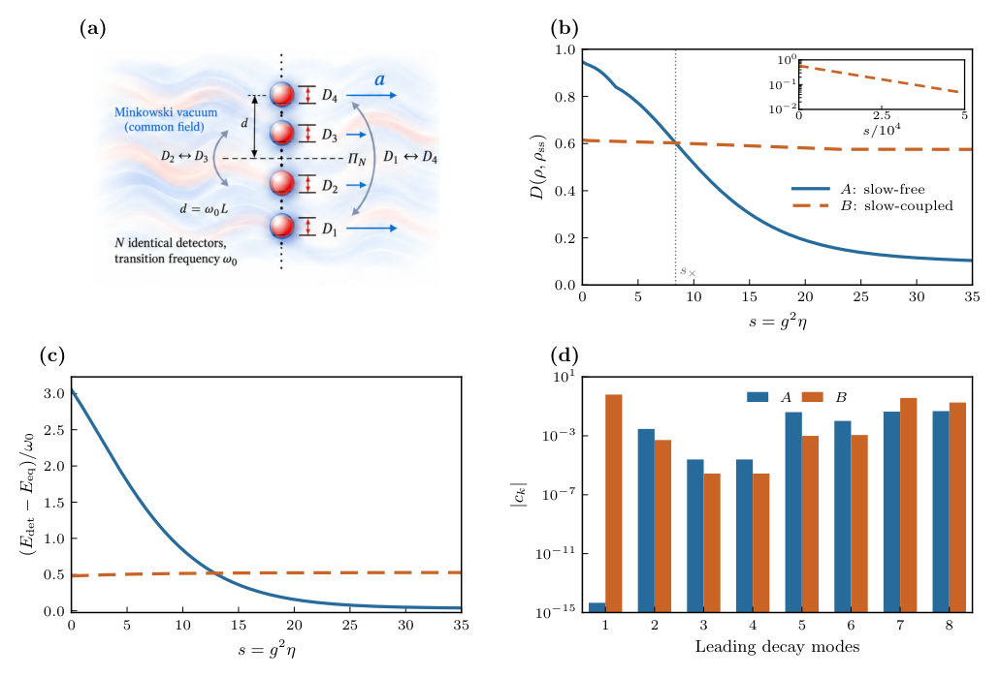
<figcaption class="paper-figure-caption"><b>Fig 1.</b> FIG. 1. Collective strong quantum Mpemba relaxation in an accelerated detector chain. (a) Four identical detectors coupled to the Minkowski vacuum, with acceleration transverse to their array. Reflection Π4 exchanges D1 ↔D4 and D2 ↔D3; adjacent sites are separated by d = ω0L in dimensionless transverse coordinates. (b)–(d) Pointlike secular dynamics for N = 4, E = ω0/a = 0.424264, d = 0.01, and s = g2η. (b) Trace distance for optimized preparation A (solid blue) and reference B (dashed orange). Despite DA(0) &gt; DB(0), the curves cross at s× ≃8.3674. The inset follows B to s = 5 × 104, revealing finite slow relaxation, ¯γslow ≃5.06156 × 10−5. (c) Excess detector energy (Edet −Eeq)/ω0. (d)...</figcaption>
</figure>
<figure class="paper-figure-card">
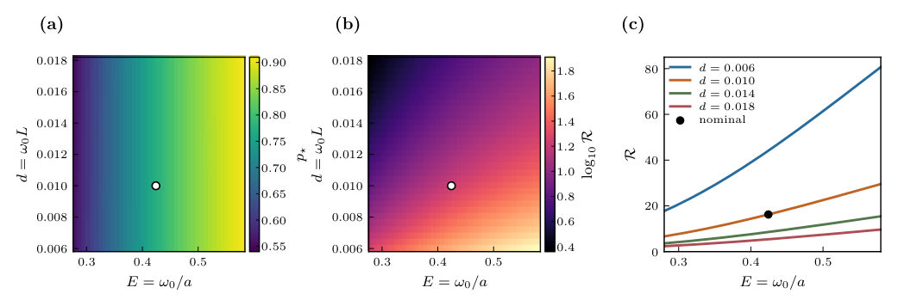
<figcaption class="paper-figure-caption"><b>Fig 2.</b> FIG. 2. Acceleration and geometry dependence of the strong-Mpemba mechanism. (a) Strong-Mpemba preparation parameter p⋆as a function of E = ω0/a and the transverse detector separation d. (b) Corresponding spectral enhancement log10 R, where R = γk∗/γslow. (c) Cuts of R as a function of E for different detector separations. The pointlike secular grid comprises 41 × 31 directly evaluated points for 0.28 ≤E ≤0.58 and 0.006 ≤d ≤0.018. The marker denotes the reference (nominal) operating point E = 0.424264 and d = 0.01, for which p⋆≃0.771543 and R4 ≃16.25.</figcaption>
</figure>
</div>

<p><strong>Summary.</strong> This theoretical paper proves the existence of a strong quantum Mpemba effect in an array of accelerated quantum detectors. The effect arises from collective dissipation mechanisms involving the conservation of specific reflection sectors. It demonstrates that the relaxation ordering can be reversed by carefully preparing the initial quantum state.</p>
<p><strong>Why it may be interesting.</strong> This work provides a concrete, non-trivial example of non-equilibrium dynamics in an open quantum system, directly addressing the Mpemba effect in a quantum context relevant to quantum field theory and quantum optics.</p>
<details>
<summary>Detailed structure</summary>
<p><strong>Main problem.</strong> The paper investigates the 'strong quantum Mpemba effect,' where a quantum state initially farther from equilibrium relaxes faster than a state initially closer to equilibrium.</p>
<p><strong>Main result.</strong> The effect is rigorously established for multiple detectors coupled to a vacuum or thermal field, stemming from the interplay between collective dissipation and conserved reflection sectors.</p>
<p><strong>Method.</strong> The analysis uses the point-like secular master equation, spectral analysis, and projection techniques to track the slow relaxation mode.</p>
<p><strong>Model / system.</strong> The system consists of N identical two-level Unruh-DeWitt detectors collectively coupled to a common massless scalar field in the Minkowski vacuum or a common thermal field.</p>
<p><strong>Key observables.</strong> Trace distance decay, slow relaxation rates ($ar{\gamma}_{	ext{slow}}$), and the spectral enhancement factor ($R$).</p>
<p><strong>Important parameters / regimes.</strong> Number of detectors ($N \ge 2$), transverse separation ($d$), and the acceleration parameter ($E$).</p>
<p><strong>Assumptions / limitations.</strong> The analysis is restricted to the point-like secular master equation and relies on the existence of two conserved reflection sectors.</p>
<p><strong>Figures summary.</strong> Figures illustrate the geometry of the detector array, comparing trace distance decay curves for optimized vs. reference states, and showing the dependence of the optimal preparation parameter and spectral enhancement factor on system parameters.</p>
<p><strong>Paper structure.</strong> The paper develops the theory by analyzing the master equation, identifying the slow relaxation mode generated by weak intersector transfer, constructing specific initial states to demonstrate the reversal of relaxation ordering, and generalizing the mechanism to thermal fields.</p>
</details>
<details>
<summary>Abstract</summary>
<p>Collective coupling to the Minkowski vacuum allows uniformly accelerated quantum detectors to exhibit a strong quantum Mpemba effect, in which a state initially farther from equilibrium relaxes faster than a closer one. We establish the existence of this effect for every fixed finite number of detectors $N\geq 2$ at sufficiently small transverse separation within the pointlike secular master equation. The mechanism originates from two reflection sectors whose populations are conserved by the leading collective dynamics. Weak intersector transfer at finite separation generates an isolated, parametrically slow relaxation mode. A simple family of initial states permits its leading-order cancellation by matching the equilibrium sector populations, while a corrected preparation eliminates the slow-mode amplitude exactly. We construct a reference state that establishes a genuine reversal of trace-distance ordering. Numerical calculations and local-rate-preserving controls identify the collective origin of the effect, while spatially smeared detector calculations support its persistence within the second-order secular framework. The same mechanism extends to detectors coupled to a common thermal field, with analytically distinct slow relaxation rates. Thus, strong Mpemba relaxation is not exclusive to acceleration but emerges from a more general interplay between collective dissipation, reflection-sector conservation, and weak symmetry-breaking transfer.</p>
</details>
<p><sub><a href="#top">↑ back to top</a></sub></p>

<p><a id="paper-2610.26573"></a></p>
<h3 id="avalanches-and-aging-driven-by-parametric-amplification-in-kerr-oscillator-networks"><a href="http://arxiv.org/abs/2610.26573v1">Avalanches and Aging Driven by Parametric Amplification in Kerr Oscillator Networks</a></h3>
<p><strong>Authors:</strong> Alejandro S. Gómez, Javier del Pino<br>
<strong>Type:</strong> theory · <strong>Category:</strong> statistical mechanics · <strong>PDF:</strong> <a href="https://arxiv.org/pdf/2610.26573v1">https://arxiv.org/pdf/2610.26573v1</a><br>
<strong>Analysis basis:</strong> full PDF text, analyzed in chunks
<strong>Topic relevance:</strong> <code>driven-dissipative phase transition</code> <strong>3/5</strong> · <code>methods for driven-dissipative</code> <strong>3/5</strong> · <code>non-equilibrium universality</code> <strong>3/5</strong> · <code>Keldysh / 2PI / non-Gaussian methods</code> <strong>2/5</strong> · <code>scars &amp; prethermalization</code> <strong>2/5</strong> · <code>Tavis-Cummings &amp; cavity-many-emitter</code> <strong>1/5</strong> · <code>analog quantum simulation</code> <strong>1/5</strong> · <code>correlated / nonlocal dissipation</code> <strong>1/5</strong></p>
<div class="figure-strip-hint">↔ Scroll figures horizontally</div>
<div class="paper-figures-scroll">
<figure class="paper-figure-card">
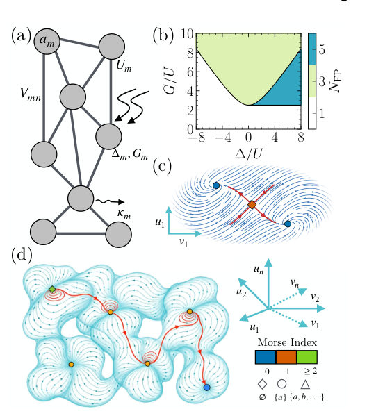
<figcaption class="paper-figure-caption"><b>Fig 1.</b> FIG. 1. (a) Network of coupled driven-dissipative nonlinear resonators with detunings ∆m, two-photon drives Gm, Kerr nonlinearities Um, loss rates κm, and cross-Kerr couplings Vm,n. (b) Mean-field phase diagram of a single KPO in the (∆/U, G/U) plane at κ/U = 5, with one, three, or five FPs. (c) Single-KPO flow in the three-FP regime at (∆/U, G/U) = (0, 3), where the unstable branches of the saddle at the origin lead to the two stable phase states. (d) Schematic of saddles in a higher-dimensional network, whose attracting directions guide the approach to modal plateaus and whose repelling ones set the escape.</figcaption>
</figure>
<figure class="paper-figure-card">
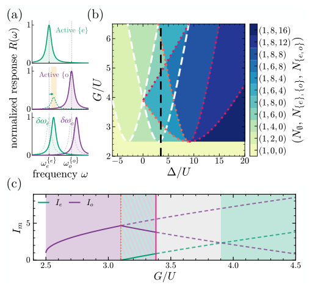
<figcaption class="paper-figure-caption"><b>Fig 2.</b> FIG. 2. (a) Schematic normalized modal responses: top, even mode active; middle, odd mode active, whose cross-Kerr shift carries the dormant even resonance (dashed) into the even- mode gain window (shaded); bottom, both modes active, with dashed monomode references. R(ω) is the normalized response of each mode, ω{m} m its resonance on the monomode {m}, and δωe,o the cross-Kerr shifts. (b) Stationary-state count in the (∆/U, G/U) plane; white dashed curves, linear instability tongues |∆e| &lt; χ and |∆o| &lt; χ; colored dotted curves, mixed branch boundaries; black dashed line, the ∆/U = 3.5 cut used in Fig. 3. (c) Stationary intensities along the cut ∆/U = 3.5 of (b), with stable branches solid...</figcaption>
</figure>
<figure class="paper-figure-card">
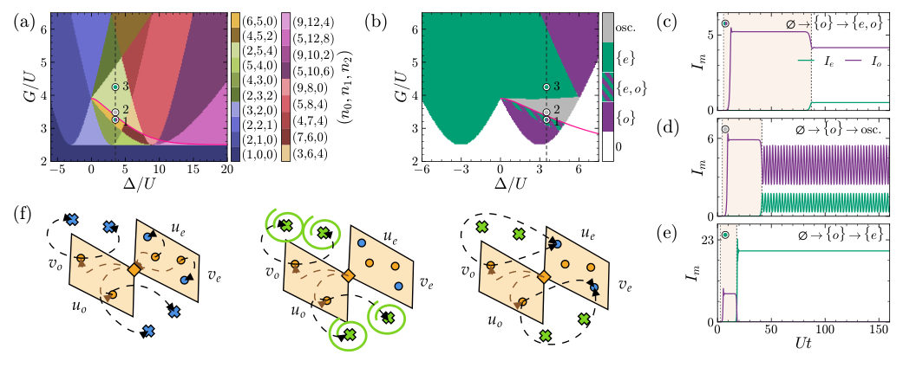
<figcaption class="paper-figure-caption"><b>Fig 3.</b> FIG. 3. (a) Morse-resolved FP landscape, labeled by the numbers (n0, n1, n2) of FPs with 0, 1, and 2 unstable directions; magenta curve, Hopf boundary of the two-mode FP. (b) Long-time states reached from vacuum perturbations, with the dashed cut and colored markers identifying the trajectories in panels (c)–(e). (c) Two-mode avalanche, ∅→{o} →{e, o}. (d) Capture by the limit cycle, ∅→{o} →osc. (e) Transfer to the even monomode, ∅→{o} →{e}. In (c)–(e), shading marks the odd-mode plateau and dotted lines the activations that end the vacuum dwell and the plateau. (f) The four invariant subspaces of the four-dimensional phase space, one per support, and representative connections colored by...</figcaption>
</figure>
<figure class="paper-figure-card">
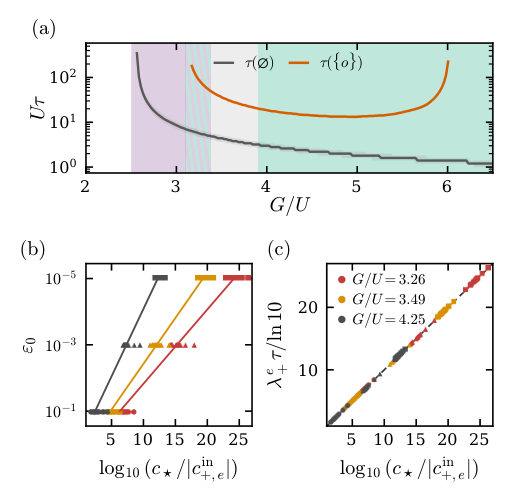
<figcaption class="paper-figure-caption"><b>Fig 4.</b> FIG. 4. (a) Dwell times in the vacuum, τ(∅) (gray), and on the odd-mode plateau, τ({o}) (orange), along the cut ∆/U = 3.5 at ε0 = 10−3: medians (lines) and interquartile ranges (bands). Backgrounds denote the support reached along the cut, colored as in Fig. 3(b). (b) Depth log10[c⋆/|cin +,e|] of the incoming seed on entering the odd-monomode neighbor- hood, for sixteen initial directions at ε0 = 10−1, 10−3, 10−5</figcaption>
</figure>
<figure class="paper-figure-card">
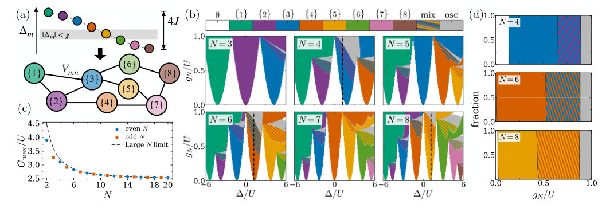
<figcaption class="paper-figure-caption"><b>Fig 5.</b> FIG. 5. (a) Top, detuning ladder of Eq. (18) for N = 8, inside the interval ∆± 2J of width 4J, with the gain window |∆m| &lt; χ shaded; bottom, modal network; nodes, single-mode supports {m}, colored as in (b); links, selected modal couplings Vm,n (all pairs are coupled). (b) Dominant late-time outcomes for N = 3, . . . , 8 in (∆/U, gN/U), using 32 uniformly sampled initial directions per point; white, endpoints classified as vacuum; solid colors, single-mode supports; stripes, mixed supports; gray, persistent activity. Unresolved trajectories are colored by their endpoint support. Dashed lines: ∆/U = 1.20 cuts for N = 4, 6, 8. (c) Size-dependent cutoff G(N) max, defined by the highest...</figcaption>
</figure>
</div>

<p><strong>Summary.</strong> This work analyzes the transient dynamics of Kerr parametric oscillator networks, showing that the approach to steady states is characterized by 'avalanches' and 'aging.' The mechanism involves sequential mode activation driven by nonlinear frequency shifts, causing the system's relaxation time to increase logarithmically with time.</p>
<p><strong>Why it may be interesting.</strong> The connection drawn between nonlinear parametric amplification, avalanche dynamics, and aging mirrors phenomena studied in glassy systems and disordered media, making it highly relevant to non-equilibrium statistical physics.</p>
<details>
<summary>Detailed structure</summary>
<p><strong>Main problem.</strong> The paper investigates the transient dynamics of driven-dissipative nonlinear systems, specifically focusing on how they approach their steady states.</p>
<p><strong>Main result.</strong> The system develops 'avalanches' of amplification and exhibits 'aging,' meaning its relaxation slows down logarithmically over time as it approaches equilibrium.</p>
<p><strong>Method.</strong> The analysis uses mean-field approximations derived from the Lindblad master equation to track the time evolution of the system's complex amplitudes.</p>
<p><strong>Model / system.</strong> The system is modeled using Kerr Parametric Oscillator (KPO) networks, which can be realized in superconducting, nanomechanical, or photonic arrays. The dynamics are governed by a master equation incorporating detunings, nonlinearities, and parametric gain.</p>
<p><strong>Key observables.</strong> Avalanche cascades, aging rate (logarithmic accumulation of activations), and the duration of 'dwell times' between activations.</p>
<p><strong>Important parameters / regimes.</strong> Parametric gain, loss rates ($\kappa_m$), detunings ($\Delta_m$), and nonlinear coupling strengths ($V_{m,n}$).</p>
<p><strong>Assumptions / limitations.</strong> The analysis relies on the high-occupation limit, which allows for the neglect of quantum correlations in the mean-field description.</p>
<p><strong>Figures summary.</strong> Figures illustrate the network structure, the mean-field phase diagram of a single KPO, and schematics showing how saddle points guide the approach to plateaus in the higher-dimensional network.</p>
<p><strong>Paper structure.</strong> The paper first establishes the physical model and the mathematical framework (Lindblad equation, mean-field flow). It then analyzes the mechanism of mode activation via parametric gain, leading to the prediction of avalanche dynamics and subsequent aging behavior.</p>
</details>
<details>
<summary>Abstract</summary>
<p>Gain, loss, and nonlinearity shape the phase-space landscape of driven-dissipative systems, such as Kerr parametric oscillator (KPO) networks realized in superconducting, nanomechanical, and photonic arrays. Networks of KPOs exploit the stationary states of this landscape for Ising machines, bosonic error-correcting codes, and sensing. Yet how transients reach these states from a given initial condition remains largely unexplored. Here we show that KPO networks with nonlinear couplings can develop avalanches in their transient dynamics: rapid cascades of amplification between modes reminiscent of the relaxation avalanches of glassy systems. The mechanism is that parametric gain first activates the modes whose detuning it can overcome, and their nonlinear frequency shifts then pull dormant modes into the gain window one at a time. Dormant modes keep decaying while they wait for their turn, so every activation starts from a smaller seed and the intervals between activations grow geometrically. The network thus ages: the longer it has evolved, the slower it changes, and activations accumulate only logarithmically in time. In a 20-mode network, each dwell lasts about twice as long as the previous one. While aging delays the approach to the stationary state, additive noise sets a floor on the seeds and unsticks the network, shortening the longest dwells first while the activation sequence survives to noise several orders of magnitude stronger.</p>
</details>
<p><sub><a href="#top">↑ back to top</a></sub></p>

<p><a id="paper-2610.26129"></a></p>
<h3 id="generalised-fluctuating-dynamic-density-functional-theory-derivation-and-applications"><a href="http://arxiv.org/abs/2610.26129v1">Generalised Fluctuating Dynamic Density-Functional Theory: Derivation and Applications</a></h3>
<p><strong>Authors:</strong> Toby Kay, Serafim Kalliadasis<br>
<strong>Type:</strong> theory · <strong>Category:</strong> statistical mechanics · <strong>PDF:</strong> <a href="https://arxiv.org/pdf/2610.26129v1">https://arxiv.org/pdf/2610.26129v1</a><br>
<strong>Analysis basis:</strong> full PDF text, analyzed in chunks
<strong>Topic relevance:</strong> <code>Keldysh / 2PI / non-Gaussian methods</code> <strong>3/5</strong> · <code>methods for driven-dissipative</code> <strong>3/5</strong> · <code>correlated / nonlocal dissipation</code> <strong>2/5</strong> · <code>driven-dissipative phase transition</code> <strong>2/5</strong> · <code>non-equilibrium universality</code> <strong>2/5</strong> · <code>quantum measurements</code> <strong>2/5</strong> · <code>analog quantum simulation</code> <strong>1/5</strong> · <code>scars &amp; prethermalization</code> <strong>1/5</strong></p>
<div class="figure-strip-hint">↔ Scroll figures horizontally</div>
<div class="paper-figures-scroll">
<figure class="paper-figure-card">
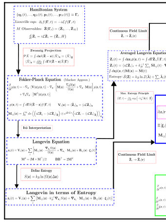
<figcaption class="paper-figure-caption"><b>Fig 1.</b> Fig. 1 Flow diagram of the structure of the derivation of the FDDFT and DDFT and the applications presented in this work. Blue boxes indicate major steps in the derivation, with the red boxes detailing the tools needed to move from one step to the next. Bold boxes display the main results of this work.</figcaption>
</figure>
</div>

<p><strong>Summary.</strong> This paper develops a Generalized Fluctuating Dynamic Density-Functional Theory (FDDFT) by deriving it from first principles using projection operator techniques. It provides a comprehensive framework to model non-equilibrium dynamics in mesoscopic systems, correctly incorporating both dissipative and stochastic effects. The formalism is highly general, successfully reproducing known results for colloidal and viscous fluids.</p>
<p><strong>Why it may be interesting.</strong> While focused on classical fluids, the rigorous derivation of non-equilibrium dynamics, the explicit inclusion of fluctuation-dissipation theorems, and the clear separation of stochastic/deterministic regimes provide a powerful theoretical template applicable to open quantum systems and quantum field theory dynamics.</p>
<details>
<summary>Detailed structure</summary>
<p><strong>Main problem.</strong> The paper addresses the challenge of extending classical Density-Functional Theory (DFT) to accurately describe the time evolution of order parameters in non-equilibrium, mesoscopic systems where thermal fluctuations are significant.</p>
<p><strong>Main result.</strong> A generalized Fluctuating Dynamic Density-Functional Theory (FDDFT) is derived from first principles, which successfully recovers established models like the colloidal FDDFT and the fluctuating Navier-Stokes equations.</p>
<p><strong>Method.</strong> The derivation employs coarse-graining techniques, specifically Zwanzig's projection operator method, starting from the microscopic Hamiltonian dynamics to yield a Fokker-Planck equation and its associated Langevin equation.</p>
<p><strong>Model / system.</strong> The theory is applied to general classical N-particle, n-species Hamiltonian systems, such as colloidal suspensions and simple viscous fluids. The dynamics are governed by the system's Hamiltonian and are analyzed via the evolution of the probability density function.</p>
<p><strong>Key observables.</strong> The primary observables include the entropy functional, the probability density function $p(\mathbf{z}, t)$, and the resulting mean dynamics derived from the entropy gradient.</p>
<p><strong>Important parameters / regimes.</strong> The analysis distinguishes between the mesoscopic scale (governed by FDDFT) and the macroscopic scale (governed by generalized DDFT), highlighting the emergence of bare and renormalized transport coefficients.</p>
<p><strong>Assumptions / limitations.</strong> The derivation relies on the Markov approximation, and the authors note that the general variational principle for the GENERIC formulation remains an open problem.</p>
<p><strong>Figures summary.</strong> Figure (1) provides a diagrammatic overview illustrating the derivation pathway and the various applications of the generalized FDDFT formalism.</p>
<p><strong>Paper structure.</strong> The paper progresses logically from the microscopic Hamiltonian dynamics (Liouville equation) to the coarse-grained probability density (Fokker-Planck equation), leading sequentially to the stochastic FDDFT (Langevin equation) and its deterministic counterpart (DDFT) via averaging.</p>
</details>
<details>
<summary>Abstract</summary>
<p>Classical density-functional theory is a powerful theoretical framework for studying the equilibrium density distribution of complex many-body systems. The core of the framework is to bridge microscopic and macroscopic descriptions of fluids through a variational principle that minimises the system's free energy. For dynamical settings, dynamic DFT (DDFT) extends the equilibrium framework to capture the time evolution of an order parameter, typically density. However, DDFT is often insufficient for mesoscopic systems far from equilibrium where fluctuations become significant, necessitating a stochastic extension: fluctuating DDFT. Here we derive a generalised FDDFT from first principles starting from the microscopic Hamiltonian dynamics using coarse-graining techniques, including Zwanzig's projection operator method. The resulting FDDFT applies to arbitrary observable fields, where the dynamics are driven by a thermodynamic force expressed in terms of an entropy functional. The dynamics consist of reversible, dissipative, and stochastic contributions, each directly linked to the underlying microscopic dynamics via the Liouville operator, Green-Kubo relations, and the fluctuation-dissipation theorem. To highlight the difference in the level of description between DDFT and FDDFT, we demonstrate how further coarse-graining via averaging leads to a generalised DDFT, valid at the macroscale. To showcase the effectiveness and utility of the generalised FDDFT, we apply it to two prototypical fluid systems: colloidal and simple viscous fluids. In the former case, we utilise the new formalism to re-derive the recently found colloidal FDDFT. In the latter case, we rigorously recover the non-isothermal extension of the Landau-Lifshitz fluctuating Navier-Stokes equations, providing fundamental derivation of this well-known phenomenological model, enabling to clarify its underlying principles.</p>
</details>
<p><sub><a href="#top">↑ back to top</a></sub></p>

<p><a id="paper-2610.26149"></a></p>
<h3 id="motility-induced-phase-separation-of-run-and-tumble-particles-under-local-stochastic-resetting"><a href="http://arxiv.org/abs/2610.26149v1">Motility-Induced Phase Separation of Run-and-Tumble Particles under Local Stochastic Resetting</a></h3>
<p><strong>Authors:</strong> Pascal Grange<br>
<strong>Type:</strong> theory · <strong>Category:</strong> statistical mechanics · <strong>PDF:</strong> <a href="https://arxiv.org/pdf/2610.26149v1">https://arxiv.org/pdf/2610.26149v1</a><br>
<strong>Analysis basis:</strong> full PDF text, analyzed in chunks
<strong>Topic relevance:</strong> <code>driven-dissipative phase transition</code> <strong>3/5</strong> · <code>methods for driven-dissipative</code> <strong>3/5</strong> · <code>non-equilibrium universality</code> <strong>3/5</strong> · <code>Keldysh / 2PI / non-Gaussian methods</code> <strong>2/5</strong> · <code>analog quantum simulation</code> <strong>2/5</strong> · <code>Frenkel-Kontorova</code> <strong>1/5</strong> · <code>correlated / nonlocal dissipation</code> <strong>1/5</strong> · <code>quantum measurements</code> <strong>1/5</strong></p>
<div class="figure-strip-hint">↔ Scroll figures horizontally</div>
<div class="paper-figures-scroll">
<figure class="paper-figure-card">
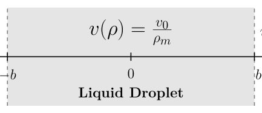
<figcaption class="paper-figure-caption"><b>Fig 1.</b> Figure 1: Spatial configuration of the steady state with a central liquid droplet of half-width b. The particle velocity v(ρ) switches from a density-dependent profile in the gas phase to a uniform minimum value inside the saturated liquid phase.</figcaption>
</figure>
<figure class="paper-figure-card">
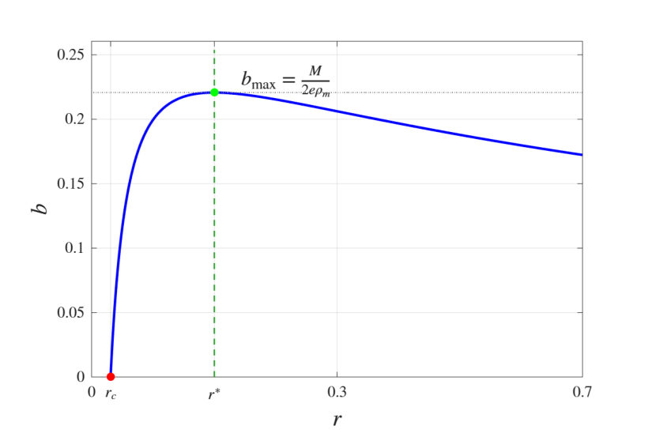
<figcaption class="paper-figure-caption"><b>Fig 2.</b> Figure 2: Exact droplet half-width b as a function of resetting rate r. The droplet emerges at rc, reaches maximum extent at r∗, and contracts asymptotically for large r.</figcaption>
</figure>
<figure class="paper-figure-card">
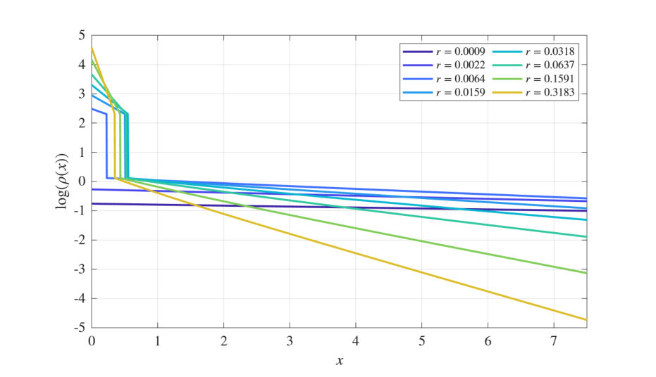
<figcaption class="paper-figure-caption"><b>Fig 3.</b> Figure 3: Stationary spatial density profile ρ(x) (logarithmic scale) representative parameters. For r &lt; rc there is a discontinuity at x = b. The density in the entire space is obtained by parity symmetry.</figcaption>
</figure>
<figure class="paper-figure-card">
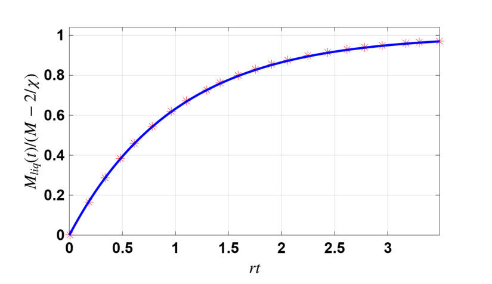
<figcaption class="paper-figure-caption"><b>Fig 4.</b> Figure 4: Time evolution of droplet mass Mliq(t) nucleating at the origin in a supersaturated gas (for implementation, v0 = 1, α = 1, ρm = 1, 000 M = 289 &gt; 2/χ, r = 0.5), confirming exponential relaxation with rate r. Stars indicate the values obtained by direct numerical simulation of the system, as described in Appendix A.</figcaption>
</figure>
<figure class="paper-figure-card">
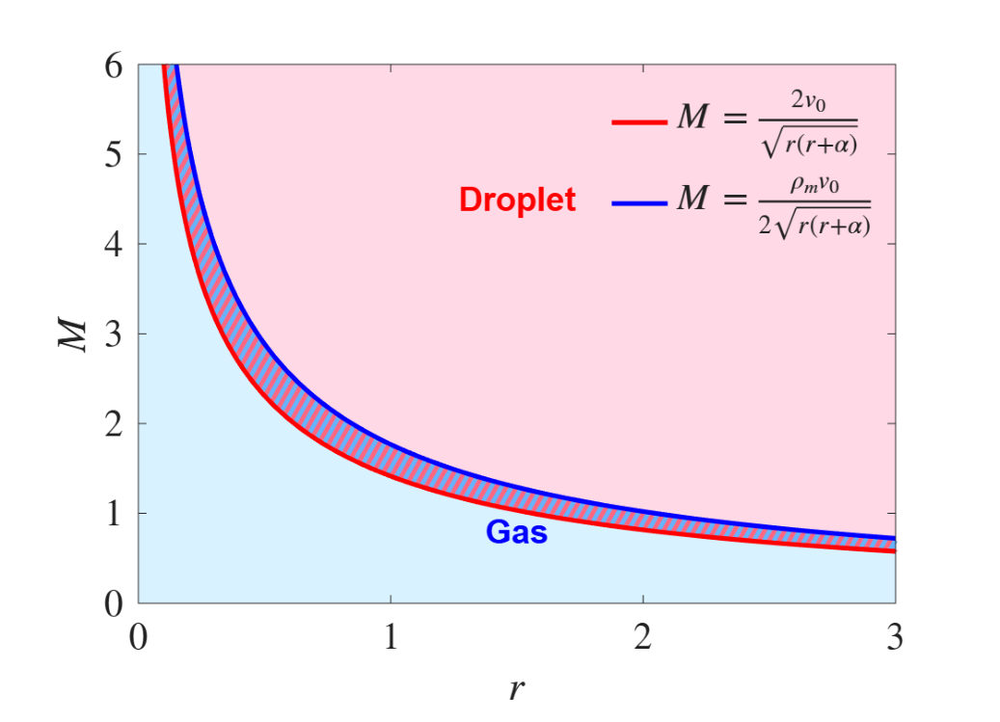
<figcaption class="paper-figure-caption"><b>Fig 5.</b> Figure 5: Phase diagram. In the domain between the two curves, there are two steady states, one of which is a supersaturated gas. The values used in the plot are ρm = 5, α = 1, v0 = 1.</figcaption>
</figure>
</div>

<p><strong>Summary.</strong> This paper theoretically analyzes how run-and-tumble particles exhibiting Motility-Induced Phase Separation behave when subjected to local stochastic resetting. It finds that above a critical rate, the system stabilizes into a distinct liquid droplet coexisting with a gas phase. The work provides exact analytical solutions for the density profiles and characterizes the size dependence of this phase separation.</p>
<p><strong>Why it may be interesting.</strong> While focused on classical active matter, the non-equilibrium nature, phase transitions, and the use of continuous kinetic equations for steady states are highly relevant to open quantum systems and non-equilibrium statistical mechanics.</p>
<details>
<summary>Detailed structure</summary>
<p><strong>Main problem.</strong> The study investigates the non-equilibrium stationary states of an active gas undergoing Motility-Induced Phase Separation (MIPS) when subjected to local stochastic resetting.</p>
<p><strong>Main result.</strong> The system undergoes a transition to a stationary two-phase state (liquid droplet in a gas background) above a critical resetting rate, and the droplet size exhibits a non-monotonic dependence on the resetting rate.</p>
<p><strong>Method.</strong> The analysis uses kinetic evolution equations to derive the exact steady-state density profile in both the gas and liquid phases, solving the resulting differential equations.</p>
<p><strong>Model / system.</strong> The model is a one-dimensional active gas composed of Run-and-Tumble Particles (RTPs) whose motility is density-dependent, and which are subjected to local stochastic resetting at the origin.</p>
<p><strong>Key observables.</strong> Stationary two-phase density profile, droplet size ($b$), relaxation timescale of the droplet, and the density profile in the surrounding gas phase.</p>
<p><strong>Important parameters / regimes.</strong> Critical resetting rate ($r_c$), density of movers ($
ho_m$), and the resetting rate ($r$).</p>
<p><strong>Assumptions / limitations.</strong> The analysis assumes parity symmetry and relies on piecewise definitions for the particle velocity based on density thresholds.</p>
<p><strong>Figures summary.</strong> Figures illustrate the spatial configuration of the steady state (liquid droplet/gas phase), the dependence of droplet size on the resetting rate, and the exponential time evolution of the droplet mass.</p>
<p><strong>Paper structure.</strong> The paper progresses by deriving the stationary state equations, analyzing the interface equilibrium conditions, solving the resulting differential equations for both phases, and finally analyzing the dynamics of droplet nucleation and the extension to finite resetting velocity.</p>
</details>
<details>
<summary>Abstract</summary>
<p>We investigate the non-equilibrium stationary states of a one-dimensional active gas composed of run-and-tumble particles (RTPs) undergoing motility-induced phase separation (MIPS) and subjected to local stochastic resetting at the origin. Unlike global resetting, local resetting maintains a mass-injection flux at the origin while preserving large-scale spatial self-organization. We demonstrate that above a critical resetting rate $r_c$, the active system undergoes a transition toward a stationary two-phase state featuring a dense liquid droplet centered at the origin coexisting with a surrounding gas phase. Using kinetic evolution equations, we derive the exact steady-state density profile expressed in terms of the Lambert function. The size of the droplet has a non-monotonic dependence on the resetting rate $r$, and attains its maximum. Furthermore, we analyze the dynamical stability of the supersaturated gas phase and show that a nucleated droplet relaxes exponentially toward its steady-state size with a relaxation timescale of $1/r$. We extend our framework to model a finite resetting velocity, proving that the stationary droplet size is invariant with respect to the resetting velocity.</p>
</details>
<p><sub><a href="#top">↑ back to top</a></sub></p>

<p><a id="paper-2610.26235"></a></p>
<h3 id="the-resource-cost-of-cooperative-invasion"><a href="http://arxiv.org/abs/2610.26235v1">The resource cost of cooperative invasion</a></h3>
<p><strong>Authors:</strong> Abhishek Chowdhury<br>
<strong>Type:</strong> theory · <strong>Category:</strong> statistical mechanics · <strong>PDF:</strong> <a href="https://arxiv.org/pdf/2610.26235v1">https://arxiv.org/pdf/2610.26235v1</a><br>
<strong>Analysis basis:</strong> full PDF text, analyzed in chunks
<strong>Topic relevance:</strong> <code>Keldysh / 2PI / non-Gaussian methods</code> <strong>3/5</strong> · <code>non-equilibrium universality</code> <strong>3/5</strong> · <code>quantum measurements</code> <strong>3/5</strong> · <code>driven-dissipative phase transition</code> <strong>2/5</strong> · <code>methods for driven-dissipative</code> <strong>2/5</strong> · <code>analog quantum simulation</code> <strong>1/5</strong> · <code>correlated / nonlocal dissipation</code> <strong>1/5</strong> · <code>scars &amp; prethermalization</code> <strong>1/5</strong></p>
<div class="figure-strip-hint">↔ Scroll figures horizontally</div>
<div class="paper-figures-scroll">
<figure class="paper-figure-card">
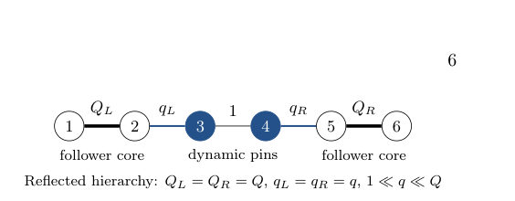
<figcaption class="paper-figure-caption"><b>Fig 1.</b> FIG. 1. The six-site contact design. Strong outer contacts suppress copies from the follower cores into the two central pins, which continue to send copies outward and align their followers. The unit central contact couples the domains. Sites 1, 2 and 5, 6 are followers, aligned through copying from their nearest pin; each pin and its two followers form a domain. A pin is dynamically protected, and its trait can change like that of any other site. Uniform introduction reaches each pin with probability 1/6. Birth-associated introduction reaches site i with probability ϑi/6, where ϑi = P</figcaption>
</figure>
<figure class="paper-figure-card">
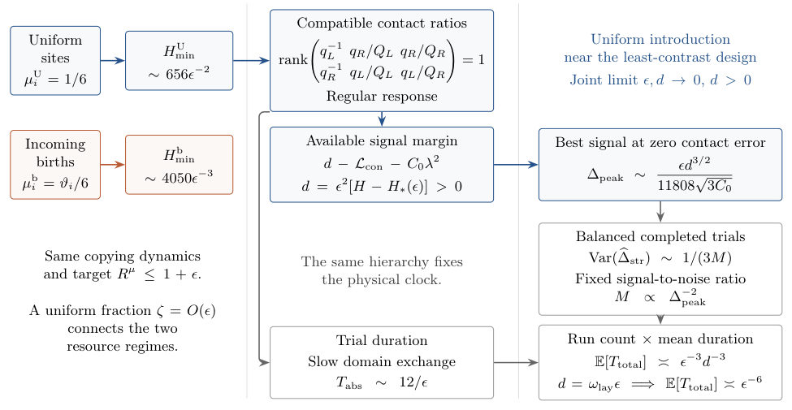
<figcaption class="paper-figure-caption"><b>Fig 2.</b> FIG. 2. From contact resources to an observable invasion advantage on the six-site path, at target benefit–cost ratio b/c = 1+ϵ with ϵ ↓0. (a) Uniform and birth-associated introduction require different least caps HU min and Hb min on contrast H(w) = max w/ min w, even though they share the threshold infimum one. Here ϑi is the incoming copying weight, and ζ is the uniform fraction in a mixture of the two introduction rules. (b,c) The blue continuation concerns uniform introduction near its least- contrast design, with consecutive weights (QL, qL, 1, qR, QR) and H∗(ϵ) = HU min(ϵ) = 656ϵ−2 + O(ϵ−1). The scaled surplus is d = ϵ2[H −H∗(ϵ)]. The matrix contains six ratios of these contacts; its...</figcaption>
</figure>
<figure class="paper-figure-card">
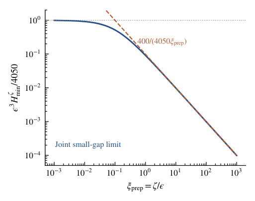
<figcaption class="paper-figure-caption"><b>Fig 3.</b> FIG. 3. Least contact contrast on the six-site path under the weak-selection target Rζ ≤1 + ϵ. The uniform fraction ζ mixes uniform and birth-associated singleton introduction. In the joint limit ϵ →0 at fixed ξprep = ζ/ϵ, the rescaled least contrast ϵ3Hζ min/4050 connects the birth-associated value one (dotted line) to the regime dominated by a small uniform frac- tion. The dashed curve is its large-ξprep asymptote, distinct from the fixed-ζ = 1 endpoint.</figcaption>
</figure>
<figure class="paper-figure-card">
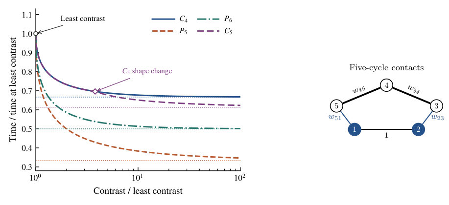
<figcaption class="paper-figure-caption"><b>Fig 4.</b> FIG. 4. Leading neutral absorption-time frontiers under uniform singleton introduction on C4, C5, P5 and P6, normalized by each support’s least-contrast design. The weak-selection target is R ≤R∗+ϵ, with ϵ ↓0 measured from that support’s threshold floor. The balanced C5 curve lies exactly on C4 until the marked change of limiting geometry at normalized contrast 3.80769 . . .. The sketch identifies the five-cycle’s unit bridge, blue access contacts and two chain contacts. Beyond the marked change, their optimizing ratio w45/(w34 + w45) tends to zero after a possible reflection, while all retained weights stay positive at finite gap. Dotted lines indicate the time-only limiting infima. All...</figcaption>
</figure>
<figure class="paper-figure-card">

<figcaption class="paper-figure-caption"><b>Fig 5.</b> FIG. 5. Finite-budget feasibility and parameter tolerance for the reflected six-site path with contacts (H, q, 1, q, H), uniform singleton introduction and target R ≤1 + ϵ. The scaled coordinates are θ = ϵq, η = ϵ2H, and the displacements are ∆q = q −q∗(ϵ), ∆H = H −H∗(ϵ). (a) The solid boundary is the exact rational weak-selection threshold at ϵ = 0.01; the shaded region is feasible. The dashed leading boundary underestimates the required budget. (b) Exact curves, centered on their own finite-ϵ minima, approach the quadratic fold relation. Distinct markers separate the nearly coincident curves; the inset shows the exact minus leading required budget. The curves are evaluations of the...</figcaption>
</figure>
</div>

<p><strong>Summary.</strong> This theoretical paper quantifies the resource cost, specifically network contact contrast, needed to sustain cooperation against defection in a structured population. It derives scaling laws showing that this required resource diverges rapidly as the selection advantage approaches zero. The work highlights that the optimal strategy depends critically on whether the advantage is measured by invasion time, resource cost, or measurement efficiency.</p>
<p><strong>Why it may be interesting.</strong> While focused on evolutionary game theory, the mathematical tools—such as analyzing non-equilibrium dynamics, resource optimization under constraints, and scaling laws in the weak coupling limit—are highly relevant to understanding phase transitions and steady states in complex quantum or classical many-body systems.</p>
<details>
<summary>Detailed structure</summary>
<p><strong>Main problem.</strong> The paper determines the minimum resource cost (contact contrast) required for cooperation to invade a population against defection in a structured network.</p>
<p><strong>Main result.</strong> The required contact contrast diverges as $\epsilon^{-2}$ or $\epsilon^{-3}$ depending on the introduction mechanism, and the optimal design balancing cost, speed, and measurement differs significantly.</p>
<p><strong>Method.</strong> The analysis uses weak selection approximations, variational identities, and optimization techniques to find the minimum resource required to maintain a fitness advantage.</p>
<p><strong>Model / system.</strong> The model is a finite contact network where individuals reproduce based on averaged cooperation payoffs, analyzed on a six-site path. Dynamics follow a source-first Birth-death updating rule.</p>
<p><strong>Key observables.</strong> Contact contrast (ratio of strongest to weakest contact), leading mean time to extinction/fixation, and the required measurement effort.</p>
<p><strong>Important parameters / regimes.</strong> The threshold gap $\epsilon$ (where $b/c = 1+\epsilon$), the selection strength $\delta$, and the network topology (e.g., six-site path).</p>
<p><strong>Assumptions / limitations.</strong> The analysis assumes weak selection, a fixed finite population size, and compares different introduction mechanisms (uniform vs. birth-associated).</p>
<p><strong>Paper structure.</strong> The paper progresses by establishing the general framework of cooperative invasion, deriving scaling laws for the required contrast under different introduction rules, and finally comparing the optimal resource allocation for different objectives (cheapest, fastest, most measurable).</p>
</details>
<details>
<summary>Abstract</summary>
<p>A contact network can favor cooperation by sheltering a lineage until its descendants compete with defectors as a group. We determine the contact strengths, invasion times and measurement effort needed to realize this advantage at fixed population size. Individuals reproduce according to averaged cooperation payoffs, and offspring replace neighbors through contacts of equal weight in both directions. Contact contrast is the ratio of strongest to weakest contact. Under weak selection on a six-site path, the least contrast needed to favor a single cooperator over the reverse invasion by a defector grows as $656ε^{-2}$ for uniformly placed mutants and $4050ε^{-3}$ for mutations in newborn offspring, as the benefit-cost ratio $b/c=1+ε$ approaches one. The extra power arises because rare replacement protects a site while suppressing mutation arrival there. Global bounds force two weakly coupled groups and exact mirror symmetry of the least-contrast contacts for sufficiently small $ε$. Under uniform introduction, additional contrast shortens the leading mean time to extinction or fixation in the absence of selection, from $12/ε$ toward $6/ε$ reproduction attempts, and eventually breaks the mirror symmetry of the fastest design. Estimating the uniform-introduction advantage from fixation outcomes of independent completed invasions defines a third optimum. Within the six-site family with mirror-symmetric, strongly separated contacts, we optimize contacts and selection strength with reproduction weighted linearly or exponentially by payoff. At fixed relative precision, with contrast a fixed factor above its minimum, the leading summed trial duration grows as $ε^{-3}$. Efficient measurement accepts a smaller advantage in exchange for shorter trials. The cheapest, fastest and most efficiently measured networks therefore differ.</p>
</details>
<p><sub><a href="#top">↑ back to top</a></sub></p>

<p><a id="paper-2610.24561"></a></p>
<h3 id="ergotropy-of-nonequilibrium-steady-states-beyond-the-full-secular-approximation"><a href="http://arxiv.org/abs/2610.24561v1">Ergotropy of nonequilibrium steady states beyond the full secular approximation</a></h3>
<p><strong>Authors:</strong> Xing-Xing Hu, Hui-Yu Yang, Kun Zhang, Xiao-Hui Wang<br>
<strong>Type:</strong> theory · <strong>Category:</strong> statistical mechanics · <strong>PDF:</strong> <a href="https://arxiv.org/pdf/2610.24561v1">https://arxiv.org/pdf/2610.24561v1</a><br>
<strong>Analysis basis:</strong> full PDF text, analyzed in chunks
<strong>Topic relevance:</strong> <code>driven-dissipative phase transition</code> <strong>3/5</strong> · <code>methods for driven-dissipative</code> <strong>3/5</strong> · <code>non-equilibrium universality</code> <strong>3/5</strong> · <code>Keldysh / 2PI / non-Gaussian methods</code> <strong>2/5</strong> · <code>analog quantum simulation</code> <strong>1/5</strong> · <code>correlated / nonlocal dissipation</code> <strong>1/5</strong> · <code>quantum measurements</code> <strong>1/5</strong> · <code>scars &amp; prethermalization</code> <strong>1/5</strong></p>
<div class="figure-strip-hint">↔ Scroll figures horizontally</div>
<div class="paper-figures-scroll">
<figure class="paper-figure-card">

<figcaption class="paper-figure-caption"><b>Fig 1.</b> FIG. 2. Coherence-only ergotropy of the NESS at resonance (∆ω = 0). All panels use the parameters T1/¯ω = 0.2, T2 = T1 + ∆T, and J/¯ω = 0.01. (a) Coherent ergotropy of the NESS as a function of the temperature bias ∆T for different exchange couplings λ. The inset shows Ecoh/(∆T)2 near equilibrium with λ/¯ω = 0.05. (b) Coherent ergotropy of the NESS as a function of the exchange coupling λ for different temperature biases ∆T. Filled dots mark independently optimized maxima. (c) Coherent ergotropy in the (λ, ∆T) plane. The white dashed curve marks the optimized value λcoh opt, and the white dotted horizontal lines indicate ∆T/¯ω = 0.2, 0.6. (d) Coherent ergotropy as a function of the...</figcaption>
</figure>
<figure class="paper-figure-card">

<figcaption class="paper-figure-caption"><b>Fig 2.</b> FIG. 3. Finite-detuning activation, composition, and optimization of NESS ergotropy. All panels use J/¯ω = 0.01 and T1/¯ω = 0.2, with T2 = T1 + ∆T. (a) Total (blue solid), coherent (orange dashed), and incoherent (green dotted) ergotropy versus temperature bias ∆T at ∆ω/¯ω = 0.02 and λ/¯ω = 0.1. The gray vertical dotted line marks the onset of incoherent ergotropy. (b) Incoherent ergotropy of two uncoupled qubits (λ = 0) versus detuning ∆ω. Open circles mark the activation endpoints where n(ω2, T2) = n(ω1, T1). (c) Incoherent-ergotropy map at T2/¯ω = 0.3. The black solid curve is the exact ∆p = 0 activation boundary. (d) Population imbalance ∆˜p = N∆p versus exchange coupling at ∆ω/¯ω =...</figcaption>
</figure>
<figure class="paper-figure-card">

<figcaption class="paper-figure-caption"><b>Fig 3.</b> FIG. 4. Comparison of NESS ergotropy with and without the full secular approximation. All panels use fixed T1/¯ω = 0.2 and T2 = T1 + ∆T, ∆ω/¯ω = 0.02, λ/¯ω = 0.1, and J/¯ω = 0.01. (a) Total ergotropy E of the partially secular NESS (blue solid) and Esec of the fully secular NESS (green dashed). (b) Coherent ergotropy Ecoh (orange solid) and the total ergotropy difference E −Esec (blue dashed). (c) Population correction δEpop = Einc −Esec (purple solid). In all panels, gray dashed and blue dotted vertical lines mark ∆psec = 0 and ∆p = 0, respectively.</figcaption>
</figure>
</div>

<p><strong>Summary.</strong> This theoretical paper analyzes the maximum extractable work (ergotropy) from a two-qubit system driven into a Non-Equilibrium Steady State (NESS). By using a refined master equation that retains steady-state coherence, the authors show that ergotropy has both coherent and incoherent components. The results clarify the physical conditions necessary for non-zero work extraction, emphasizing the necessity of going beyond the full secular approximation.</p>
<p><strong>Why it may be interesting.</strong> This work is highly relevant to AMO and open quantum systems as it provides quantitative insights into how non-equilibrium driving can sustain extractable work, directly challenging the limitations of standard secular approximations in quantum thermodynamics.</p>
<details>
<summary>Detailed structure</summary>
<p><strong>Main problem.</strong> The paper investigates the ergotropy, or maximum extractable work, of Non-Equilibrium Steady States (NESS) in quantum systems, focusing on limitations of standard approximations.</p>
<p><strong>Main result.</strong> The NESS ergotropy can be decomposed into coherent and incoherent parts, and the activation of incoherent ergotropy requires the hotter reservoir to couple to the qubit with the higher bare frequency.</p>
<p><strong>Method.</strong> The analysis uses the Bloch-Redfield master equation, specifically employing a partial-secular step to retain steady-state coherence, which is crucial for accurate work calculations.</p>
<p><strong>Model / system.</strong> The system consists of two exchange-coupled qubits interacting with independent thermal reservoirs. The dynamics are governed by a master equation derived under weak-coupling and Markovian approximations.</p>
<p><strong>Key observables.</strong> Ergotropy (maximum extractable work), steady-state coherence ($c$), and population imbalance ($\Delta p$).</p>
<p><strong>Important parameters / regimes.</strong> Temperature bias ($\Delta T$), qubit detuning ($\Delta\omega$), and exchange coupling ($\lambda$).</p>
<p><strong>Assumptions / limitations.</strong> The analysis relies on the Markov approximation, Born approximation, and crucially, the retention of coherence via a partial-secular approximation over the full secular approximation.</p>
<p><strong>Figures summary.</strong> Figure 1 schematically illustrates the two-qubit model coupled to local reservoirs and shows the system's four eigenstates and associated transitions.</p>
<p><strong>Paper structure.</strong> The paper establishes the theoretical framework by defining ergotropy in NESS, derives the partial-secular master equation, and then analyzes the resulting steady state to derive analytical criteria and explicit expressions for the coherent and incoherent contributions to the total ergotropy.</p>
</details>
<details>
<summary>Abstract</summary>
<p>Understanding the generation and activation of ergotropy, the maximum work extractable by cyclic unitary operations, is central to quantum battery research. Positive-temperature thermal states are passive, whereas nonequilibrium environments can sustain nonpassive steady states with nonzero ergotropy. However, the full secular approximation commonly used in Lindblad descriptions can suppress steady-state coherence and obscure its contribution to ergotropy. Using a Bloch-Redfield master equation beyond the full secular approximation, we investigate the ergotropy of the nonequilibrium steady state (NESS) of two exchange-coupled qubits connected to independent thermal reservoirs. The NESS ergotropy of two qubits with the same frequency is entirely coherent and grows quadratically with temperature bias near equilibrium. In contrast, detuned qubits can exhibit incoherent ergotropy. We derive an exact analytical criterion for its activation and show that activation requires the hotter reservoir to be coupled to the qubit with the higher bare frequency. Comparing NESSs obtained with and without full secularization reveals quantitative and qualitative differences in ergotropy that reflect changes in both its coherent and incoherent contributions. The results clarify the mechanisms of NESS ergotropy activation and demonstrate the importance of retaining steady-state coherence beyond the full secular approximation when characterizing stationary work resources.</p>
</details>
<p><sub><a href="#top">↑ back to top</a></sub></p>

<p><a id="paper-2610.25112"></a></p>
<h3 id="frustration-assisted-electrical-switching-in-math261math"><a href="http://arxiv.org/abs/2610.25112v1">Frustration-Assisted Electrical Switching in $Co_xTaS_2$</a></h3>
<p><strong>Authors:</strong> Matan Sterenberg, Bar Segura, Muntaser Naamneh, Eran Maniv<br>
<strong>Type:</strong> experiment · <strong>Category:</strong> disordered systems and neural networks · <strong>PDF:</strong> <a href="https://arxiv.org/pdf/2610.25112v1">https://arxiv.org/pdf/2610.25112v1</a><br>
<strong>Analysis basis:</strong> full PDF text, analyzed in chunks
<strong>Topic relevance:</strong> <code>analog quantum simulation</code> <strong>3/5</strong> · <code>scars &amp; prethermalization</code> <strong>3/5</strong> · <code>driven-dissipative phase transition</code> <strong>2/5</strong> · <code>non-equilibrium universality</code> <strong>2/5</strong> · <code>quantum measurements</code> <strong>2/5</strong> · <code>Frenkel-Kontorova</code> <strong>1/5</strong> · <code>correlated / nonlocal dissipation</code> <strong>1/5</strong> · <code>methods for driven-dissipative</code> <strong>1/5</strong></p>
<div class="figure-strip-hint">↔ Scroll figures horizontally</div>
<div class="paper-figures-scroll">
<figure class="paper-figure-card">

<figcaption class="paper-figure-caption"><b>Fig 1.</b> FIG. 1. Characterization of near-stoichiometric Hall-inactive CoxTaS2 near x = 0.33. (a) Longitudinal resistivity ρ∥(T) measured on a microdevice from 2–300 K. The dashed vertical line marks the AFM transition temperature TN = 31.5 K. Inset: transverse resistivity ρ⊥versus out-of-plane magnetic field, measured at 2 K between −9 and 9 T on an additional cross-shaped switching microdevice; no resolved zero-field spontaneous Hall component is observed. (b) Heat capacity Cp(T) of the parent bulk crystal measured in out-of-plane magnetic fields of 0, 8, and 14 T. The sharp anomaly at TN = 31.5 K defines the magnetic transition used throughout the paper. (c) Magnetic susceptibility M/H measured...</figcaption>
</figure>
<figure class="paper-figure-card">

<figcaption class="paper-figure-caption"><b>Fig 2.</b> FIG. 2. Electrical switching in Hall-inactive CoxTaS2 near x = 0.33. (a) SEM image of the cross-shaped focused- ion-beam microdevice. The horizontal and vertical arms define the fixed write-pulse directions A and B, while the diagonal arms provide the main readout paths. (b) Write/read schematic for the diagonal-readout configuration used in panel (c). Alternating unipolar write pulses are applied along A and B. The resistance state is read using a 0.1 mA AC probe current along one diagonal bar. The longitudinal and transverse readout channels are parallel and perpendicular to the AC probe current, respectively. The probe-current direction is rotated by 45 degrees relative to the A/B...</figcaption>
</figure>
<figure class="paper-figure-card">

<figcaption class="paper-figure-caption"><b>Fig 3.</b> FIG. 3. Temperature- and current-dependent switching reveals two dynamical regimes. (a) Representative transverse-resistance traces R⊥(t) measured on the cross-shaped switching microdevice for write-pulse currents of 35, 25, and 15 mA. Traces are colored by temperature from 4 to 34 K. The traces illustrate two response lobes: a stronger low- temperature/high-current lobe and a weaker high-temperature/low-current lobe, with an intermediate temperature range in which both contributions are visible. (b) Switching amplitude ∆R⊥/R∥, expressed as a normalized peak-to-peak percentage, as a function of temperature T and write-pulse current I. Normalized peak-to-peak switching amplitudes are...</figcaption>
</figure>
<figure class="paper-figure-card">

<figcaption class="paper-figure-caption"><b>Fig 4.</b> FIG. 4. Magnetic aging, post-field relaxation, and comparison to electrical switching. (a) Aging response ∆M(T) obtained by subtracting the no-pause zero-field-cooled warming reference from zero-field-cooled warming curves measured after a 60 min pause at Tpause, ∆M(T) = M pause ZFC (T) −M no pause ZFC (T). Raw data are presented in Supplementary Fig. S14. Curves are colored by Tpause = 6, 10, 14, 18, 22, 26, 30, and 34 K; dashed vertical lines mark the corresponding pause temperatures. (b) Phenomenological aging components extracted from panel (a) as a function of Tpause: Dip-like memory amplitude (top) and Step-like amplitude (bottom). The labels denote line-shape components of the aging...</figcaption>
</figure>
</div>

<p><strong>Summary.</strong> This work investigates electrical switching in the frustrated antiferromagnet $    ext{Co}_x   ext{TaS}_2$, showing that the process is not governed by simple magnetic torques. Instead, the switching relies on the material's history-dependent, glassy magnetic dynamics, confirming that magnetic frustration provides a pathway for electrical control in AFMs.</p>
<p><strong>Why it may be interesting.</strong> The strong correlation found between electrical switching contrast and magnetic relaxation strength suggests that the underlying physics is governed by slow, glassy dynamics, which is a key concept in disordered magnetic systems relevant to many-body physics.</p>
<details>
<summary>Detailed structure</summary>
<p><strong>Main problem.</strong> To determine if magnetic frustration and glassy dynamics can actively assist electrical switching in antiferromagnets, moving beyond simple torque models.</p>
<p><strong>Main result.</strong> The electrical switching in $  ext{Co}_x   ext{TaS}_2$ is governed by slow, history-dependent magnetic dynamics, establishing a route to functional switching through a dynamically soft antiferromagnetic landscape.</p>
<p><strong>Method.</strong> Electrical switching measurements using current pulses on microstructured devices, complemented by magnetic aging and post-field-relaxation measurements.</p>
<p><strong>Model / system.</strong> The study uses near-stoichiometric $    ext{Co}_x   ext{TaS}_2$, a van der Waals antiferromagnet located near a composition boundary between Hall-active and Hall-inactive magnetic regimes.</p>
<p><strong>Key observables.</strong> Nonvolatile anisotropic resistance change ($\Delta R_{\perp}/R_{\parallel}$), magnetic relaxation strength, and the temperature/current dependence of the switching response.</p>
<p><strong>Important parameters / regimes.</strong> The activation current density ($\sim 10^5 	ext{ A cm}^{-2}$), the Néel temperature ($T_N \approx 31.5 	ext{ K}$), and the correlation between relaxation strength and switching amplitude.</p>
<p><strong>Assumptions / limitations.</strong> The switching mechanism is driven by the frustration-induced, history-dependent dynamics of the AFM state, rather than simple thermal effects or rigid torque application.</p>
<p><strong>Figures summary.</strong> Figures illustrate the AFM transition, ARPES data showing van Hove singularities, and maps showing the complex dependence of the switching amplitude on both temperature and applied current.</p>
<p><strong>Paper structure.</strong> The paper progresses from characterizing the material's electronic and magnetic properties (AFM ordering, van Hove singularities) to demonstrating the electrical switching effect, and finally correlating this switching behavior with slow magnetic relaxation dynamics (aging/relaxation measurements).</p>
</details>
<details>
<summary>Abstract</summary>
<p>Electrical switching in antiferromagnets is commonly described as the action of current-induced torques on a rigid order parameter. In frustrated magnets, however, competing states can create a history-dependent energy landscape in which slow collective dynamics actively participate in electrical reconfiguration. Here, we demonstrate frustration-assisted switching in near-stoichiometric $Co_xTaS_2$, a van der Waals antiferromagnet located at the composition-sensitive boundary between Hall-active and Hall-inactive multi-Q-related magnetic regimes. Although the crystals exhibit no resolved spontaneous Hall response, they retain van Hove singularities near the Fermi level and order antiferromagnetically below $T_N \simeq 31.5 K$. Current pulses write nonvolatile anisotropic resistance states in microstructured devices, with an activation current density nearly an order of magnitude below that reported for the Hall-active lower-intercalation phase. The switching response separates into two temperature-dependent dynamical regimes rather than following a single current threshold. Independent magnetization-aging and post-field-relaxation measurements reveal slow, history-dependent magnetic dynamics, and the relaxation strength closely follows the inverse switching amplitude. These results identify magnetic frustration and glassy dynamics as central ingredients in the electrical reconfiguration of $Co_xTaS_2$, establishing a route to functional switching through a dynamically soft antiferromagnetic landscape.</p>
</details>
<p><sub><a href="#top">↑ back to top</a></sub></p>

<p><a id="paper-2610.26620"></a></p>
<h3 id="non-markovian-exceptional-points-and-information-backflow-a-heisenberg-reaction-coordinate-approach"><a href="http://arxiv.org/abs/2610.26620v1">Non-Markovian exceptional points and information backflow: a Heisenberg reaction-coordinate approach</a></h3>
<p><strong>Authors:</strong> Daniel Holst, Gianmichele Blasi, Shishir Khandelwal<br>
<strong>Type:</strong> theory · <strong>Category:</strong> other · <strong>PDF:</strong> <a href="https://arxiv.org/pdf/2610.26620v1">https://arxiv.org/pdf/2610.26620v1</a><br>
<strong>Analysis basis:</strong> full PDF text, analyzed in chunks
<strong>Topic relevance:</strong> <code>correlated / nonlocal dissipation</code> <strong>3/5</strong> · <code>driven-dissipative phase transition</code> <strong>3/5</strong> · <code>methods for driven-dissipative</code> <strong>3/5</strong> · <code>Keldysh / 2PI / non-Gaussian methods</code> <strong>2/5</strong> · <code>non-equilibrium universality</code> <strong>2/5</strong> · <code>analog quantum simulation</code> <strong>1/5</strong> · <code>quantum measurements</code> <strong>1/5</strong></p>
<div class="figure-strip-hint">↔ Scroll figures horizontally</div>
<div class="paper-figures-scroll">
<figure class="paper-figure-card">

<figcaption class="paper-figure-caption"><b>Fig 1.</b> FIG. 1. Example of the system–bath geometry used for the reaction-coordinate mapping, with Ns = 2, N 1 b = 1, and N 2 b = 2.</figcaption>
</figure>
<figure class="paper-figure-card">

<figcaption class="paper-figure-caption"><b>Fig 2.</b> FIG. 2. EP lines for Eq. (15) with κ1 = κ2 = κ and re- gions showing a non-zero BLP measure defined in Eq. (9) in grey. Note that with a characteristic polynomial of degree 3, a negative discriminant is now a sufficient but not necessary condition for non-Markovian revivals.</figcaption>
</figure>
<figure class="paper-figure-card">

<figcaption class="paper-figure-caption"><b>Fig 3.</b> FIG. 3. BLP measure for dynamics given by Eq. (20). Red and blue curves show EP2± branches of Eq. (21) with EP4 determined by Eq. (22) highlighted. Note that the EP lines no longer demarcate the boundary between Markovian and Non-Markovian dynamics.</figcaption>
</figure>
<figure class="paper-figure-card">

<figcaption class="paper-figure-caption"><b>Fig 4.</b> FIG. 4. Parametric sweep of Eq. (24) with respect to q for δ1+ δ2 = 1 and q ∈[0, 1/4] plotted as a function of corresponding g, κ values. As q approaches q⋆from 0 (blue curve) the two double eigenvalues of ˜A are real. Beyond the EP4 the real part of the eigenvalues is constant (−S/4) with an increasing imaginary component.</figcaption>
</figure>
<figure class="paper-figure-card">

<figcaption class="paper-figure-caption"><b>Fig 5.</b> FIG. 5. Integrated information backflow Bρ1,ρ2 = R</figcaption>
</figure>
</div>

<p><strong>Summary.</strong> This paper develops a Heisenberg-equation approach using reaction coordinates to analyze open quantum systems exhibiting non-Markovian behavior. It investigates how Exceptional Points govern information backflow, demonstrating that the relationship between EPs and revivals is complex and order-dependent. The methodology offers a powerful tool for controlling information loss in engineered quantum environments.</p>
<p><strong>Why it may be interesting.</strong> This work provides powerful, exact analytical tools (Heisenberg/RC) to study non-Markovian dynamics, which is crucial for understanding realistic open quantum systems where memory effects are significant.</p>
<details>
<summary>Detailed structure</summary>
<p><strong>Main problem.</strong> The paper investigates the dynamics of open quantum systems, specifically focusing on non-Markovian effects and the role of Exceptional Points (EPs) in governing information backflow.</p>
<p><strong>Main result.</strong> The analysis shows that the notion that EPs universally mark the onset of quantum revivals is false for higher-order EPs, and the framework allows for controlling information loss using engineered reservoirs.</p>
<p><strong>Method.</strong> The authors employ a Heisenberg-equation approach utilizing the reaction-coordinate formalism to derive exact analytical dynamics, which simplifies analysis compared to standard master equation techniques.</p>
<p><strong>Model / system.</strong> The model involves a system of $N_s$ modes coupled to $N_b$ non-interacting baths, often analyzed using Lorentzian spectral densities and mapped onto a Langevin equation for a vector $\vec{v}$.</p>
<p><strong>Key observables.</strong> Non-Markovian revivals, information backflow (measured by trace distance or BLP measure), and the rate of irreversible information loss.</p>
<p><strong>Important parameters / regimes.</strong> The order of the Exceptional Point ($m$), the damping rates ($\alpha, \delta$), and the ratio of coupling strengths ($\alpha/\delta$).</p>
<p><strong>Assumptions / limitations.</strong> The analysis often assumes initial factorized states and relies on the reaction-coordinate mapping to reduce the complexity of the full system-bath dynamics.</p>
<p><strong>Figures summary.</strong> Figures illustrate the system-bath geometry for the RC mapping and show the dynamics related to the effective Hamiltonian.</p>
<p><strong>Paper structure.</strong> The paper progresses from introducing the Heisenberg-equation/RC method to analyzing non-Markovian revivals at various EP orders, and finally applying the framework to engineered reservoirs to control information loss.</p>
</details>
<details>
<summary>Abstract</summary>
<p>The primary pathway to the investigation of exceptional points (EPs) in open quantum systems has been the use of Markovian master equations. However, recently it has been realised that they can arise in settings that show non-Markovian behaviour. The main approach in this direction has been the use of pseudomodes, which allow the influence of a structured environment to be replaced by new damped auxiliary modes. In this work, we use a Heisenberg-equation approach which relies on the reaction-coordinate formalism to obtain exact analytical dynamics. First, we show how our method considerably simplifies the analysis compared to the use of master equations. Second, we utilise it to discuss non-Markovian revivals in systems with second and higher-order EPs, showing that the notion that EPs demarcate the onset of revivals is not generally true. We then utilise our results to discuss the dynamical effects of higher-order non-Markovian EPs, deriving bounds on the number of revivals and investigating enhanced asymptotic relaxation near higher-order EPs. Finally, we investigate non-Markovian EPs with engineered reservoirs and show how they can be utilised to control the rate of irreversible information loss.</p>
</details>
<p><sub><a href="#top">↑ back to top</a></sub></p>

<p><a id="paper-2610.26459"></a></p>
<h3 id="tunable-annealing-of-defects-in-self-aligning-active-crystals"><a href="http://arxiv.org/abs/2610.26459v1">Tunable annealing of defects in self-aligning active crystals</a></h3>
<p><strong>Authors:</strong> Kanka Ghosh, Andreas M. Menzel<br>
<strong>Type:</strong> theory · <strong>Category:</strong> statistical mechanics · <strong>PDF:</strong> <a href="https://arxiv.org/pdf/2610.26459v1">https://arxiv.org/pdf/2610.26459v1</a><br>
<strong>Analysis basis:</strong> full PDF text, analyzed in chunks
<strong>Topic relevance:</strong> <code>driven-dissipative phase transition</code> <strong>3/5</strong> · <code>non-equilibrium universality</code> <strong>3/5</strong> · <code>analog quantum simulation</code> <strong>2/5</strong> · <code>methods for driven-dissipative</code> <strong>2/5</strong> · <code>Frenkel-Kontorova</code> <strong>1/5</strong> · <code>Keldysh / 2PI / non-Gaussian methods</code> <strong>1/5</strong> · <code>correlated / nonlocal dissipation</code> <strong>1/5</strong> · <code>quantum measurements</code> <strong>1/5</strong> · <code>scars &amp; prethermalization</code> <strong>1/5</strong></p>
<div class="figure-strip-hint">↔ Scroll figures horizontally</div>
<div class="paper-figures-scroll">
<figure class="paper-figure-card">

<figcaption class="paper-figure-caption"><b>Fig 1.</b> FIG. 1. Progressive transformation from poly- to single-crystalline order in ABP crystals. Snapshots at different time instances are shown from left to right in each row. Time is expressed in reduced Lennard-Jones units. The domains containing atoms are colored by (a–d) local hexatic order |ψ6,i|, (e–h) local grain orientation Θ6,i, and (i–l) individual particle orientations θi. (m–p) presents zoomed-in regions, respectively, from (i–l) with explicit arrows attached with active particles showing corresponding orientations of active forcing during these progressive snapshots. These simulations are performed on a domain of dimension 100σ × 100σ at a fixed packing fraction ϕ = 0.87. Activity...</figcaption>
</figure>
<figure class="paper-figure-card">

<figcaption class="paper-figure-caption"><b>Fig 2.</b> FIG. 2. Structural positional reorganization towards a single-crystal continues beyond saturation of global polar orientational order. (a) The global polar orientational order parameter P is presented for the system in Fig. 1 as a function of time t. Four yellow squares A (t=0), B (t=34.875), C (t=71.1), and D (t=150) along the polarization curve relate to the four columns (times) in Fig. 1. An inset shows the particle configuration at time t = 0, with particles in a zoomed-in fragment colored according to their local coordination number inferred from Voronoi tessellation. (b) Voronoi-neighbor coordination maps for the three sequential snapshots labeled B, C, and D in panel (a). The gradual...</figcaption>
</figure>
<figure class="paper-figure-card">

<figcaption class="paper-figure-caption"><b>Fig 3.</b> Figure 3 demonstrates an example situation with Pe = 800 (lp ≈266.67) and τp = 3.33 of such velocity fluc- tuations during the poly-to-single-crystal transformation of self-aligning active crystals. At short times, active forcing is expected to dominate. Initial velocity fluctu- ations show slightly elevated values ≳v2 0. The excess contribution can be attributed to interaction forces. Af- ter a transient period, frequent collisions due to repulsive interactions at high densities constrain particle motion. Thereby, they suppress the overall velocity fluctuations within the crystalline structure. Meanwhile, at high Pe (hence high lp), active persistence produces phase sepa- rated dense and...</figcaption>
</figure>
<figure class="paper-figure-card">

<figcaption class="paper-figure-caption"><b>Fig 4.</b> FIG. 3. A typical demonstration of the time evolution of the velocity variance during poly-to-single-crystal transformation. (a) Time evolution of the velocity variance δv2(=PN i=1(vi −⟨v⟩)2/N), presented together with the con- tributions from the mean squared velocity ⟨v2⟩(= PN i=1 |vi|2/N), the squared mean velocity |⟨v⟩|2(= | P</figcaption>
</figure>
<figure class="paper-figure-card">

<figcaption class="paper-figure-caption"><b>Fig 5.</b> Figure 3(b) elucidates the relation between velocity fluctuations and corresponding progressive changes in the crystal structure. We mark four instances in Fig. 3(a) at times t = 1.4, 5, 16.15, and 150 via A, B, C, and D, respectively. The peak of the velocity variance curve and thus the peak in spatial velocity fluctuations corresponds to a typical MIPS state, shown in panel A of Fig. 3(b). The corresponding zoomed-in orientation map for the in- dividual particle orientations θi in Fig. 3(c), panel A, confirms associated large variations in directions of ac- tive particle forcing.</figcaption>
</figure>
</div>

<p><strong>Summary.</strong> This work explores how active matter systems, modeled as active crystals, can self-heal defects to achieve perfect single-crystal order. By controlling the timescales associated with particle persistence and alignment, researchers demonstrated a tunable, activity-assisted annealing mechanism. This provides a non-equilibrium route for designing reconfigurable soft materials.</p>
<p><strong>Why it may be interesting.</strong> The concepts of non-equilibrium phase transitions, defect dynamics, and the role of active fluctuations in achieving ordered states are highly relevant to understanding open quantum systems and driven many-body dynamics.</p>
<details>
<summary>Detailed structure</summary>
<p><strong>Main problem.</strong> The study investigates the mechanism of defect annealing and the transition from defect-rich polycrystalline to defect-free single-crystal states in active matter systems.</p>
<p><strong>Main result.</strong> Defect annealing is shown to be controllable by tuning the spatiotemporal orientational fluctuations, suggesting that activity-assisted annealing can drive structural reorganization.</p>
<p><strong>Method.</strong> The research employs numerical simulations using overdamped Langevin equations of motion for Active Brownian Particles (ABPs) to model the coupled translational and rotational dynamics.</p>
<p><strong>Model / system.</strong> The system models active crystals, ranging from living organisms to artificial metamaterials, using ABPs interacting via a repulsive WCA potential. The dynamics are governed by Langevin equations incorporating active forces and torques.</p>
<p><strong>Key observables.</strong> Crystallographic order (poly- to single-crystal), local hexatic order parameter ($g_6(r)$), global polar order parameter ($P$), and the number of remaining dislocations ($N_{	ext{dislo}}$).</p>
<p><strong>Important parameters / regimes.</strong> Activity magnitude (Péclet number), persistence length ($   ext{l}_p$), and alignment timescales ($ au_p$).</p>
<p><strong>Assumptions / limitations.</strong> The analysis often relies on separating the roles of activity magnitude, persistence, and alignment timescales, and sometimes assumes $  ext{l}_a \ll    ext{l}_p$.</p>
<p><strong>Figures summary.</strong> Figures illustrate the time evolution of crystal order, the dependence of polar order on timescale control, and the sample-to-sample variability in defect annihilation.</p>
<p><strong>Paper structure.</strong> The paper progresses by establishing the physical problem (defect control), detailing the simulation setup and dynamics, and then systematically analyzing how tuning different activity timescales ($ au_p$ vs. $ ext{l}_p$) controls the annealing process and the resulting structural phase.</p>
</details>
<details>
<summary>Abstract</summary>
<p>Obtaining defect-free single-crystals is of crucial importance in soft matter and materials science, spanning both fundamental interests and practical applications. Active crystals, encompassing diverse dense systems from living organisms to artificial metamaterials, can offer a promising platform for autonomous structural reorganization. We demonstrate that increasing spatiotemporal orientational fluctuations around the mean polarized state can enhance crystallographic order in active crystals. Poly-to-single-crystal transformations in defect-rich, self-aligned active Brownian crystals with coupled translational-rotational dynamics are investigated. We show that long-lived persistence with slow alignment controls the defect-annealing capability. By disentangling activity magnitude from associated timescales, we reveal activity-assisted annealing. Tuning the persistence length enables overcoming thermal energy barriers. Simultaneously adjusting persistence and alignment timescales can tune relaxation from <code>fast' to</code>slow', yielding defect-rich and defect-free crystals, respectively. Furthermore, active crystals of point particles are found to exhibit similar defect annealing when flocking is delayed by tuning the timescale of the velocity relaxation towards the polarized state. These findings suggest that the mechanism may extend to a broader class of active crystals. Our results intersect statistical physics of living soft matter with the mechanics of defects and microstructures, proposing a nonequilibrium route towards reconfigurable materials.</p>
</details>
<p><sub><a href="#top">↑ back to top</a></sub></p>

<p><a id="paper-2610.25471"></a></p>
<h3 id="textitin-situ-certification-of-multiparticle-indistinguishability-in-a-generic-interferometer"><a href="http://arxiv.org/abs/2610.25471v1">\textit{In situ} certification of multiparticle indistinguishability in a generic interferometer</a></h3>
<p><strong>Authors:</strong> Valery Shchesnovich<br>
<strong>Type:</strong> theory · <strong>Category:</strong> quantum information and computing · <strong>PDF:</strong> <a href="https://arxiv.org/pdf/2610.25471v1">https://arxiv.org/pdf/2610.25471v1</a><br>
<strong>Analysis basis:</strong> full PDF text, analyzed in chunks
<strong>Topic relevance:</strong> <code>Full counting statistics</code> <strong>3/5</strong> · <code>interference shaping light</code> <strong>3/5</strong> · <code>quantum optics experiment</code> <strong>3/5</strong> · <code>QC/QI experiment</code> <strong>2/5</strong> · <code>quantum measurements</code> <strong>2/5</strong> · <code>analog quantum simulation</code> <strong>1/5</strong></p>
<div class="figure-strip-hint">↔ Scroll figures horizontally</div>
<div class="paper-figures-scroll">
<figure class="paper-figure-card">

<figcaption class="paper-figure-caption"><b>Fig 1.</b> FIG. 1. In situ certification of n-photon indistinguishabil- ity. (1) The n photons of interest (n = 4) are interfering in a generic linear interferometer, possibly with loss, with M ≥n input and output ports. Select a fixed subset ΩK of 1 ≤K &lt; M output ports. (2) In each run i, record the total number Ni of photons detected in ΩK and compute Zi = Ni(Ni −1)/[n(n −1)], the fraction of all input pho- ton pairs for which both photons are detected in ΩK. (3) The sample mean bP (2|n) R = R−1 PR i=1 Zi over R runs estimates the marginal two-photon bunching probability P (2|n) in ΩK. (4) Compare the measured probability with the ideal maximum P (2|n) max , attained only by indistinguishable...</figcaption>
</figure>
</div>

<p><strong>Summary.</strong> This paper introduces a novel, scalable method to certify the indistinguishability of identical particles in quantum interferometers by measuring only two-particle marginal bunching statistics. By avoiding the intractable calculation of full $n$-particle output distributions, the required experimental resources scale polynomially, making it highly practical for large-scale quantum optics experiments like Boson Sampling.</p>
<p><strong>Why it may be interesting.</strong> This work provides a concrete, resource-efficient diagnostic tool for verifying fundamental assumptions (indistinguishability) critical for realizing quantum advantage in photonic quantum computation.</p>
<details>
<summary>Detailed structure</summary>
<p><strong>Main problem.</strong> The paper proposes a scalable and efficient method to quantify the multiparticle indistinguishability of identical bosons or fermions in quantum interference experiments.</p>
<p><strong>Main result.</strong> The method achieves this certification by analyzing only the two-particle marginal bunching probabilities, which requires a polynomial number of experimental runs, unlike the full $n$-particle statistics which demands exponential resources.</p>
<p><strong>Method.</strong> It uses marginal bunching and anti-bunching properties derived from measuring the fraction of detected photon pairs ($Z_i$) over many experimental runs ($R$).</p>
<p><strong>Model / system.</strong> The analysis is applied to identical bosons or fermions interfering in a generic linear interferometer, with specific suitability for single photons in large-scale experiments like Boson Sampling.</p>
<p><strong>Key observables.</strong> Marginal two-photon bunching probability ($P^{(2|n)}$) and the resulting indistinguishability deficit ($D$).</p>
<p><strong>Important parameters / regimes.</strong> The required number of experimental runs ($R$) scales polynomially with particle number ($n$) and interferometer size, provided the contrast is non-zero.</p>
<p><strong>Assumptions / limitations.</strong> The method assumes the interferometer is Haar-random unitary for the polynomial scaling guarantees, and that the two-particle marginal statistics are sufficient for certification.</p>
<p><strong>Figures summary.</strong> Figure 1 illustrates the four-step process for in situ certification, detailing the calculation of the pair fraction $Z_i$ and the final comparison step.</p>
<p><strong>Paper structure.</strong> The paper develops the theory by first establishing the two-particle case, then generalizing the measurement to marginal probabilities, and finally deriving the required statistical bounds on the number of experimental runs needed for certification.</p>
</details>
<details>
<summary>Abstract</summary>
<p>We propose a scalable and efficient \textit{in situ} method for assessing the multiparticle indistinguishability of identical bosons or fermions in quantum interference experiments on linear interferometers by harnessing quantum parallelism and the bunching/anti-bunching tendencies of these particles. The proposed certification method can be applied to any generic linear interferometer. For particles occupying distinct input ports of a Haar-random unitary interferometer, the number of experimental runs required to attain a prescribed statistical precision is polynomial in the number of particles, the interferometer size, and the inverse precision, with high probability. Our method is robust under losses: for uniform particle losses, the polynomial scaling is preserved when the inverse single-particle survival probability is polynomially bounded. Our scheme is especially suitable for certifying the indistinguishability of single photons in large-scale interference experiments, such as Boson Sampling in the regime of quantum advantage over classical computation.</p>
</details>
<p><sub><a href="#top">↑ back to top</a></sub></p>

<p><a id="paper-2610.24589"></a></p>
<h3 id="autonomous-thermal-switching-outperforms-the-frozen-optimum-with-vanishing-correlations"><a href="http://arxiv.org/abs/2610.24589v1">Autonomous Thermal Switching Outperforms the Frozen Optimum with Vanishing Correlations</a></h3>
<p><strong>Authors:</strong> Siyi Deng, Longxing Xu, Zhuolin Ye, Xian He, Jianhui Wang<br>
<strong>Type:</strong> theory · <strong>Category:</strong> statistical mechanics · <strong>PDF:</strong> <a href="https://arxiv.org/pdf/2610.24589v1">https://arxiv.org/pdf/2610.24589v1</a><br>
<strong>Analysis basis:</strong> full PDF text, analyzed in chunks
<strong>Topic relevance:</strong> <code>driven-dissipative phase transition</code> <strong>3/5</strong> · <code>non-equilibrium universality</code> <strong>3/5</strong> · <code>Keldysh / 2PI / non-Gaussian methods</code> <strong>2/5</strong> · <code>correlated / nonlocal dissipation</code> <strong>2/5</strong> · <code>methods for driven-dissipative</code> <strong>2/5</strong> · <code>analog quantum simulation</code> <strong>1/5</strong> · <code>quantum measurements</code> <strong>1/5</strong></p>
<div class="figure-strip-hint">↔ Scroll figures horizontally</div>
<div class="paper-figures-scroll">
<figure class="paper-figure-card">

<figcaption class="paper-figure-caption"><b>Fig 1.</b> FIG. 1. Reversible model underlying the two main re- sults. (a) The curves are conditional profiles at fixed c, each spending ∆on a different barrier. Fast switching averages their conductances with weights q∗ c = αc, giving g∞ aut = g({ ¯we}). Optimizing the weights yields Eq. (1); gopt st is its separately optimized frozen benchmark. (b) Each row shows visible tran- sitions in one configuration; vertical links represent reversible switching at scale Γ. For this path construction, M = n −1 and the joint equilibrium is Πic = πiq∗ c. At fixed profiles and weights, increasing Γ preserves the averaged conductances while suppressing auxiliary deviations. The slow-rate deficit is O(Γ−1) and the...</figcaption>
</figure>
<figure class="paper-figure-card">

<figcaption class="paper-figure-caption"><b>Fig 2.</b> FIG. 2. A minimal analytic witness of strict separation. (a) At fixed x = β∆&gt; 0 (shown for x = 1), full-budget frozen conductances satisfy wLwR = w2 0ex. Equal mixing of the extreme profiles gives a point above this curve. (b) Each extreme profile leaves one bottleneck; thermal switching balances both. The best frozen allocation splits the lowering equally. (c) Gaps normalized by g0 = 3w0: the optimal frozen and fast-switching values are ex/2 and (1 + ex)/2, respectively. Their ratio is cosh(x/2) &gt; 1.</figcaption>
</figure>
<figure class="paper-figure-card">

<figcaption class="paper-figure-caption"><b>Fig 3.</b> FIG. 4. Optimal collective relaxation and the finite- rate hierarchy. (a) Globally optimal autonomous and frozen gaps for the Curie–Weiss magnetization chain at βJ = 1.2 and h = 0, with identical budget ∆, equilibrium weights, and bare rates at each N. The autonomous optimum uses N single-edge configurations. Error bars bracket the frozen optimum to relative width below 2 × 10−7, unresolved at this scale. (b) The same optimal device at N = M = 40: relative joint-gap deficit (circles) and peak auxiliary departure (squares) versus switching rate. Dashed lines indicate the inverse and inverse-square laws of Eq. (2); profiles, weights, and preparation remain fixed.</figcaption>
</figure>
<figure class="paper-figure-card">

<figcaption class="paper-figure-caption"><b>Fig 4.</b> FIG. 3. Finite speed advantage with diminishing auxiliary departure. Exact joint dynamics for x = 1, q∗= (1/2, 1/2), and p(0) = (0.80, 0.15, 0.05); g0 = 3w0. (a) The full joint gap crosses the best frozen value at Γc/g0 = 4e1/2</figcaption>
</figure>
<figure class="paper-figure-card">

<figcaption class="paper-figure-caption"><b>Fig 5.</b> FIG. 5. Trajectory-level kinetic-Monte-Carlo simulation. (a),(b) System and auxiliary components of one illustrative trajectory at Γ/g0 = 3. (c) Exact normalized imbalance (lines) and Monte Carlo estimates (symbols) for three switching rates. Error bars are one standard error; points are shown where the signal exceeds three standard errors. (d) Exact rate deficit [g∞ aut −rvis(Γ)]/g0 (with g0 = 1) and peak eD (stored free energy in units of kBT), together with finite-record reconstructions. Peak-departure error bars are bootstrap standard deviations. The guides show the predicted Γ−1 and Γ−2 powers.</figcaption>
</figure>
</div>

<p><strong>Summary.</strong> This work theoretically proves that actively controlling system parameters via fast, autonomous switching can enhance thermal transport rates beyond the best static (frozen) configuration. By analyzing the gap in joint Markov dynamics, the authors establish a quantifiable advantage that remains robust even as transient correlations diminish. This has implications for designing highly efficient energy conversion or transport mechanisms.</p>
<p><strong>Why it may be interesting.</strong> It provides rigorous theoretical bounds on non-equilibrium transport, showing how dynamic control (fast switching) can surpass static optimization limits, which is crucial for understanding energy efficiency in nanoscale devices.</p>
<details>
<summary>Detailed structure</summary>
<p><strong>Main problem.</strong> The paper investigates whether autonomous thermal switching can enhance transport/relaxation rates beyond the theoretical limit set by the best 'frozen' barrier allocation while maintaining equilibrium.</p>
<p><strong>Main result.</strong> Autonomous switching is shown to provide a strict, quantifiable advantage over the frozen optimum gap, and this advantage persists even when system-auxiliary correlations vanish at finite, fast switching rates.</p>
<p><strong>Method.</strong> The analysis uses theoretical bounds, comparing the supremum of the joint gap (autonomous) against the gap derived from fixed barrier allocations (frozen optimum) using Markov master equations.</p>
<p><strong>Model / system.</strong> The study uses a general framework of finite reversible networks coupled to auxiliary configurations, analyzed via specific models like a three-state device, a Curie-Weiss magnet, and a colloidal particle.</p>
<p><strong>Key observables.</strong> The primary observables are the 'gaps' ($g_{	ext{sup}}^{	ext{aut}}$ vs. $g_{	ext{opt}}^{	ext{st}}$), which quantify the enhanced conductance, alongside rate deficits and peak auxiliary departure measures.</p>
<p><strong>Important parameters / regimes.</strong> The key parameters include the lowering budget ($\Delta$), the auxiliary switching rate ($\Gamma$), and the size/connectivity of the network ($N$).</p>
<p><strong>Assumptions / limitations.</strong> Assumptions include the validity of joint detailed balance, the ability to separate relaxation from correlation decay, and approximations used for continuous models (e.g., basin factor-ization).</p>
<p><strong>Figures summary.</strong> Figures illustrate the comparison between the optimal frozen and fast-switching gaps, showing a clear separation, and demonstrate the scaling of rate deficits and departure measures with the switching rate $\Gamma$.</p>
<p><strong>Paper structure.</strong> The paper develops results for finite reversible networks by comparing the autonomous gap to the frozen optimum, then analyzes the rate dependence, providing specific model examples (three-state, Curie-Weiss) to confirm the theoretical advantage.</p>
</details>
<details>
<summary>Abstract</summary>
<p>Can autonomous thermal switching outperform the best frozen barrier allocation while keeping system--auxiliary correlations arbitrarily small? We establish this relaxation advantage at fixed lowering budget and visible equilibrium, preserving joint detailed balance. On finite reversible networks, optimal fast switching mixes profiles concentrating the budget on single edges. A three-state model gives a strict gain and its finite-rate threshold. Faster switching preserves the gain while correlations vanish throughout relaxation. Collective and continuous models suggest a colloidal test.</p>
</details>
<p><sub><a href="#top">↑ back to top</a></sub></p>

<p><a id="paper-2610.25243"></a></p>
<h3 id="enhancement-of-liquid-liquid-phase-transition-under-shear-flow"><a href="http://arxiv.org/abs/2610.25243v1">Enhancement of liquid-liquid phase transition under shear flow</a></h3>
<p><strong>Authors:</strong> Kyohei Takae<br>
<strong>Type:</strong> theory · <strong>Category:</strong> statistical mechanics · <strong>PDF:</strong> <a href="https://arxiv.org/pdf/2610.25243v1">https://arxiv.org/pdf/2610.25243v1</a><br>
<strong>Analysis basis:</strong> full PDF text, analyzed in chunks
<strong>Topic relevance:</strong> <code>driven-dissipative phase transition</code> <strong>3/5</strong> · <code>non-equilibrium universality</code> <strong>3/5</strong> · <code>Keldysh / 2PI / non-Gaussian methods</code> <strong>2/5</strong> · <code>methods for driven-dissipative</code> <strong>2/5</strong> · <code>Frenkel-Kontorova</code> <strong>1/5</strong> · <code>analog quantum simulation</code> <strong>1/5</strong> · <code>correlated / nonlocal dissipation</code> <strong>1/5</strong> · <code>quantum measurements</code> <strong>1/5</strong></p>
<div class="figure-strip-hint">↔ Scroll figures horizontally</div>
<div class="paper-figures-scroll">
<figure class="paper-figure-card">

<figcaption class="paper-figure-caption"><b>Fig 1.</b> FIG. 1. Unstable region of the order-parameter fluctuation in the wavevector plane, λψ &gt; 0 in the long-</figcaption>
</figure>
<figure class="paper-figure-card">

<figcaption class="paper-figure-caption"><b>Fig 2.</b> FIG. 2. Occurrence of the transition in the ( ˙γ,L) plane for V0 = 0.01. (a) α = 10, τ = −0.123. (b) α = 10,</figcaption>
</figure>
<figure class="paper-figure-card">

<figcaption class="paper-figure-caption"><b>Fig 3.</b> FIG. 3. Structure factor of the order parameter Sφ(q) of metastable liquid 1 under shear at L = 0.02,</figcaption>
</figure>
<figure class="paper-figure-card">

<figcaption class="paper-figure-caption"><b>Fig 4.</b> FIG. 4. Incubation time tinc for V0 = 0.01. (a),(b) tinc for (a) α = 10 and (b) α = −10. (c),(d) The scaling</figcaption>
</figure>
<figure class="paper-figure-card">

<figcaption class="paper-figure-caption"><b>Fig 5.</b> FIG. 5. Incubation time tinc for V0 = 0.02, plotted as in Fig. 4. The transition occurs at all the shear rates,</figcaption>
</figure>
</div>

<p><strong>Summary.</strong> This work theoretically and numerically investigates how shear flow drives a liquid-liquid phase transition (LLT) in a liquid. It shows that shear acts as a new control parameter, destabilizing the metastable liquid above a critical shear rate ($\dot{\gamma}_c$). The transition is characterized by anisotropic domain nucleation, demonstrating that external flow profoundly alters the thermodynamics of phase change.</p>
<p><strong>Why it may be interesting.</strong> The coupling between external fields (shear flow) and intrinsic phase transition dynamics is a key non-equilibrium problem relevant to understanding complex fluid behavior, which shares mathematical parallels with driven quantum systems.</p>
<details>
<summary>Detailed structure</summary>
<p><strong>Main problem.</strong> The paper investigates how shear flow influences the liquid-liquid phase transition (LLT) in a single-component liquid.</p>
<p><strong>Main result.</strong> Shear rate acts as a control variable for the LLT, inducing the transition above a critical shear rate ($\dot{\gamma}_c$) via a feedback mechanism that enhances order parameter fluctuations.</p>
<p><strong>Method.</strong> The study employs a two-order-parameter hydrodynamic model, analyzing stability using linear theory and confirming results with full hydrodynamic simulations.</p>
<p><strong>Model / system.</strong> The system is a single-component liquid undergoing LLT, modeled using a two-order-parameter hydrodynamic framework where viscosity depends on the structural order parameter. Governing equations include mass and momentum conservation, alongside the evolution equation for the non-conserved order parameter.</p>
<p><strong>Key observables.</strong> The structure factor $S_\varphi(q)$, the critical shear rate $\dot{\gamma}_c$, and the amplification factor $G$ of fluctuations.</p>
<p><strong>Important parameters / regimes.</strong> Dimensionless shear rate ($\dot{\gamma}/\dot{\gamma}_c$) and the ratio $\Lambda$ of the thermodynamic relaxation rate to $\dot{\gamma}_c$.</p>
<p><strong>Assumptions / limitations.</strong> The analysis uses an isothermal limit and assumes the kinetic coefficient $L$ is small, simplifying the dynamics to non-conserved kinetics.</p>
<p><strong>Figures summary.</strong> The notes detail the mathematical framework for analyzing fluctuation growth and structure factor evolution under shear, but do not describe specific figure contents.</p>
<p><strong>Paper structure.</strong> The paper builds from establishing the hydrodynamic model and governing equations, proceeding through linear stability analysis in Fourier space, and concluding with nonlinear hydrodynamic simulations to confirm the shear-induced transition.</p>
</details>
<details>
<summary>Abstract</summary>
<p>In a liquid--liquid transition (LLT), a single-component liquid transforms into another liquid with different density and viscosity. Flow therefore couples to the transition, but the effect of shear flow is not understood. Here we investigate the LLT under shear with a two-order-parameter hydrodynamic model in which the viscosity depends on the non-conserved structural order parameter. Under shear, a fluctuation of the order parameter drives a compressional flow through the viscosity, and the resulting density change enhances the order parameter fluctuation. In a linear analysis, this feedback destabilizes the metastable liquid above a critical shear rate $\dotγ_{\rm c}$ for wavevectors in particular directions. Because the flow rotates the wavevector, a fluctuation grows only for a finite time duration, and its amplification is determined by the dimensionless shear rate $\dotγ/\dotγ_{\rm c}$ and the second dimensionless number $Λ$, the ratio of the thermodynamic relaxation rate of the order parameter to $\dotγ_{\rm c}$. In hydrodynamic simulations, shear above about $\dotγ_{\rm c}$ induces the transition in the metastable region when $Λ\gtrsim1$. The transition proceeds by nucleation of domains whose morphology becomes anisotropic. The incubation time decreases and the onset of the viscosity increase is accelerated as $\dotγ$ and $Λ$ increase. These results imply that the shear rate is a control variable of LLT in addition to temperature and pressure, selecting whether and how a metastable liquid transforms.</p>
</details>
<p><sub><a href="#top">↑ back to top</a></sub></p>

<p><a id="paper-2610.26603"></a></p>
<h3 id="beyond-fidelity-resolving-errors-in-photonic-seed-state-generation"><a href="http://arxiv.org/abs/2610.26603v1">Beyond Fidelity: Resolving Errors in Photonic Seed State Generation</a></h3>
<p><strong>Authors:</strong> Sara Bartolucci, Patrick Birchall, Jacob Bulmer, Sam Gartenstein, Mihir Pant, Terry Rudolph, Chris Sparrow, Andrzej Veitia<br>
<strong>Type:</strong> theory · <strong>Category:</strong> quantum information and computing · <strong>PDF:</strong> <a href="https://arxiv.org/pdf/2610.26603v1">https://arxiv.org/pdf/2610.26603v1</a><br>
<strong>Analysis basis:</strong> full PDF text, analyzed in chunks
<strong>Topic relevance:</strong> <code>interference shaping light</code> <strong>3/5</strong> · <code>quantum measurements</code> <strong>3/5</strong> · <code>Full counting statistics</code> <strong>2/5</strong> · <code>methods for driven-dissipative</code> <strong>2/5</strong> · <code>analog quantum simulation</code> <strong>1/5</strong> · <code>correlated / nonlocal dissipation</code> <strong>1/5</strong> · <code>driven-dissipative phase transition</code> <strong>1/5</strong></p>
<div class="figure-strip-hint">↔ Scroll figures horizontally</div>
<div class="paper-figures-scroll">
<figure class="paper-figure-card">

<figcaption class="paper-figure-caption"><b>Fig 1.</b> FIG. 1. Schematic for the error mechanisms that we consider in this work. Distinguishability, multiphoton (coherent photon addition), and loss at the input, and loss and detector noise (incoherent photon addition) at the detectors. Yellow circles are photons in the “good” mode, red circles are photons in the “bad” mode. Here shown as an example for some ninp = m = 5 Bell state generation circuit, e.g. the 5DFT in Figure 4a. These error mechanisms lead to a noisy output state, ρ(p) out, which we can then use to calculate output subspace probabilities Pr(Q|p) as discussed in Section III B.</figcaption>
</figure>
<figure class="paper-figure-card">

<figcaption class="paper-figure-caption"><b>Fig 2.</b> FIG. 2. Commuting of the loss channels at the input to loss channels on the SSG output modes. The quantities next to the ellipses give the probability which parameterizes the loss channel, as defined in Appendix B. The first step shows how the balanced loss channels commute across a unitary matrix to loss channels on the output and detected modes, while the second step shows the transformation of loss on the detected mode to effective loss on the SSG outputs. The resulting effective loss can be seen to be minimized when the error response coefficient cLdet→QV = 0. The remainder of the loss on the outputs is unavoidable.</figcaption>
</figure>
<figure class="paper-figure-card">

<figcaption class="paper-figure-caption"><b>Fig 3.</b> FIG. 3. Sketch of the error processes which should be considered to model detector loss and detector noise, with Kraus operators as defined in Appendix B. In this example, the S6 Bell state generator, introduced in Section VI C with a successful detection outcome p = (2, 2), is drawn. When loss and multiphoton errors are commuted through the circuit, the intrinsic error removal properties of the S6 SSG mean that there is zero amplitude for any output where the states |2⟩|3⟩, |3⟩|2⟩, |1⟩|2⟩, or |2⟩|1⟩are present in the two detected modes. Thus, when we condition on the successful measurement outcome, to first order there is no impact from these error channels.</figcaption>
</figure>
<figure class="paper-figure-card">

<figcaption class="paper-figure-caption"><b>Fig 4.</b> FIG. 4. Circuit schematic of seed state generators discussed in Section VI. The 5DFT (a), 2-3DFT (b), S6 (c), and H8 (d) Bell state generator circuits, the 2-H4 3GHZ state generator circuit (e) and the 4-3DFT 4GHZ state generator circuit (f). Black horizontal and crossing lines represent optical modes. Rounded boxes indicate any implementation of the indicated unitary transformation. Black vertical lines indicate balanced beam splitters, with transformation given by H. Triangles are passive phase shifts. Circuit layouts are drawn with detectors on the first mdet modes. This is not intended to represent how these circuits should be realized in practice, which should consider practical...</figcaption>
</figure>
<figure class="paper-figure-card">

<figcaption class="paper-figure-caption"><b>Fig 5.</b> FIG. 5. Certain error mechanisms in SSG produce states in which multiple qubits are simultaneously in leakage subspaces. Such leakage is likely to cause subsequent fusions to fail, preventing the affected states from entering the resource state. We call these errors fusion heraldable. Panel (a) sketches one way in which these fusion heraldable states can be generated. Here detector loss in the 2-H4 3GHZ generator results in a state which lives in the (M, V, V ), (V, M, V ), or (V, V, M) output subspaces. Panel (b) gives the output subspace probabilities for the 2-H4 and “standard” PC 3GHZ generators with input loss, Linp, of βLinp = 0.05 and no other errors. For both generators,...</figcaption>
</figure>
</div>

<p><strong>Summary.</strong> This paper introduces a detailed error analysis framework for generating entangled photonic seed states crucial for linear optical quantum computing. By moving beyond simple fidelity metrics, the authors quantify how specific detector losses and noise channels degrade the output state. They demonstrate improved generators that are robust to these common physical imperfections.</p>
<p><strong>Why it may be interesting.</strong> This work is highly relevant to quantum optics and open quantum systems as it provides rigorous, quantitative tools to characterize and mitigate realistic noise sources (detector loss/noise) in photonic quantum computation protocols.</p>
<details>
<summary>Detailed structure</summary>
<p><strong>Main problem.</strong> The paper addresses the need for a detailed understanding of linear-optical error performance when probabilistically generating entangled seed states for quantum computing.</p>
<p><strong>Main result.</strong> The authors developed a framework showing that destructive many-photon interference can suppress errors, and they presented new generators where detector loss and noise do not affect the output Bell state quality to first order.</p>
<p><strong>Method.</strong> They developed a comprehensive framework to resolve sensitivities to physically distinct errors, analyzing the output state's probability distribution over error-affected subspaces rather than just fidelity.</p>
<p><strong>Model / system.</strong> The work focuses on photonic quantum computing architectures utilizing linear optical transformations to generate small dual-rail qubit entangled states (seed states). The analysis models errors arising from input channels and detector measurements.</p>
<p><strong>Key observables.</strong> The conditional heralded subspace probability distribution $   ext{Pr}(Q|p)$ and the error response coefficients $c(p)$ are key observables.</p>
<p><strong>Important parameters / regimes.</strong> The analysis is performed to first order in the error probability $eta_E$, and the success probability of the generators is a key metric.</p>
<p><strong>Assumptions / limitations.</strong> The analysis assumes that errors are single-mode error channels applied sequentially (input or detector) and neglects errors occurring within the interferometer components.</p>
<p><strong>Figures summary.</strong> The notes reference tables detailing error response coefficients for various generators (S6, H8, etc.) across different Pauli error combinations, and figures illustrating error mechanisms.</p>
<p><strong>Paper structure.</strong> The paper systematically develops an error framework, applies it to analyze specific seed state generators (Bell and GHZ states), and quantifies the error response coefficients for various error channels.</p>
</details>
<details>
<summary>Abstract</summary>
<p>An important aspect of many linear optical quantum computing architectures is probabilistically generating small dual-rail qubit entangled states, or seed states. While many schemes to achieve this have been discovered, attention has been primarily focused on minimizing input resources and maximizing success probability rather than establishing a detailed understanding of linear-optical error performance. In this work, we develop a framework for resolving sensitivities to physically distinct errors in linear optical state generation, allowing us to identify precise ways in which these errors affect the properties of the output state. We use this framework to identify seed state generators in which destructive many-photon interference prevents detector loss and detector noise from causing a falsely successful heralding event. We show that this effect suppresses errors, for example cutting the effective loss on the output of particular Bell state generators in half relative to a standard scheme. We also present a new Bell state generator in which both detector loss and detector noise do not affect the quality of the output Bell state to first order, and a 4GHZ generator with &gt;75% higher success probability than a standard circuit. In addition we provide some useful identities, bounds and invariants for studying linear optical seed state generation.</p>
</details>
<p><sub><a href="#top">↑ back to top</a></sub></p>
<hr>
<p>
<a href="index.html">← Index</a>
 · <a href="papers_01.html">← Previous</a> · <a href="papers_03.html">Next →</a>
</p>
<hr>

</body>
</html>
